Easy Script in Python
80000ST10020a Rev.13 – 2010-12-03


Easy Script in Python
80000ST10020a Rev.13 – 2010-12-03
APPLICABILITY TABLE
PRODUCT
GT863-PY
GT864-PY
GM862-QUAD-PY
GM862-GPS
GC864-PY
GC864-PY w/ SIM holder
GC864-QUAD-V2
GC864-DUAL-V2
GE863-PY
GE863-GPS
GE863-SIM
GE864-PY
GE864-QUAD-V2
GE864-DUAL-V2
GE864-QUAD Automotive
GE864-QUAD Automotive V2
GE864-QUAD Atex
GE865-QUAD
GL865-DUAL
From SW Versions:
7.03.xx2
10.0x.xx3
Reproduction forbidden without Telit Communications S.p.A. written authorization - All Rights Reserved
Page 2 of 117


Easy Script in Python
80000ST10020a Rev.13 – 2010-12-03
Contents
1.
INTRODUCTION .................................................................................................................................... 9
1.1.
SCOPE ............................................................................................................................................................ 9
1.2.
AUDIENCE ...................................................................................................................................................... 9
1.3.
CONTACT INFORMATION, SUPPORT .................................................................................................................... 9
1.4.
DOCUMENT ORGANIZATION ............................................................................................................................. 10
1.5.
TEXT CONVENTIONS ....................................................................................................................................... 10
1.6.
RELATED DOCUMENTS ................................................................................................................................... 11
1.7.
DOCUMENT HISTORY ...................................................................................................................................... 12
2.
EASY SCRIPT EXTENSION – PYTHON INTERPRETER .......................................................................... 14
2.1.
OVERVIEW ..................................................................................................................................................... 14
2.2.
PYTHON 1.5.2+ COPYRIGHT NOTICE ................................................................................................................. 16
2.3.
PYTHON INSTALLATION ................................................................................................................................... 17
2.4.
PYTHON IMPLEMENTATION DESCRIPTION ........................................................................................................... 18
2.5.
INTRODUCTION TO PYTHON ............................................................................................................................. 20
2.5.1.
Data types .......................................................................................................................................... 20
2.5.2.
Operators ........................................................................................................................................... 21
2.5.3.
Compound statements ...................................................................................................................... 21
2.5.4.
Conditional execution ........................................................................................................................ 22
2.5.5.
Loops ................................................................................................................................................. 22
2.5.6.
Resources .......................................................................................................................................... 23
2.6.
PYTHON CORE SUPPORTED FEATURES ............................................................................................................... 23
3.
PYTHON BUILD-IN CUSTOM MODULES .............................................................................................. 24
3.1.
CMUX AND PYTHON ...................................................................................................................................... 24
3.2.
MDM BUILT-IN MODULE ................................................................................................................................. 25
3.2.1.
MDM.send(string, timeout) ............................................................................................................... 25
3.2.2.
MDM.receive(timeout) ....................................................................................................................... 26
3.2.3.
MDM.read() ........................................................................................................................................ 27
3.2.4.
MDM.sendbyte(byte, timeout) ........................................................................................................... 27
3.2.5.
MDM.receivebyte(timeout) ................................................................................................................ 27
3.2.6.
MDM.readbyte() ................................................................................................................................. 28
3.2.7.
MDM.getDCD() ................................................................................................................................... 28
3.2.8.
MDM.getCTS() .................................................................................................................................... 28
3.2.9.
MDM.getDSR() ................................................................................................................................... 29
3.2.10.
MDM.getRI() ....................................................................................................................................... 29
3.2.11.
MDM.setRTS(RTS_value) .................................................................................................................. 29
3.2.12.
MDM.setDTR(DTR_value) .................................................................................................................. 30
3.3.
MDM2 BUILT-IN MODULE ............................................................................................................................... 31
3.3.1.
MDM2.send(string, timeout) ............................................................................................................. 31
3.3.2.
MDM2.receive(timeout) ..................................................................................................................... 32
3.3.3.
MDM2.read() ...................................................................................................................................... 33
3.3.4.
MDM2.sendbyte(byte, timeout) ......................................................................................................... 33
3.3.5.
MDM2.receivebyte(timeout) .............................................................................................................. 34
3.3.6.
MDM2.readbyte() ............................................................................................................................... 34
Reproduction forbidden without Telit Communications S.p.A. written authorization - All Rights Reserved
Page 3 of 117


Easy Script in Python
80000ST10020a Rev.13 – 2010-12-03
3.3.7.
MDM2.getDCD() ................................................................................................................................. 34
3.3.8.
MDM2.getCTS() .................................................................................................................................. 35
3.3.9.
MDM2.getDSR() ................................................................................................................................. 35
3.3.10.
MDM2.getRI() ..................................................................................................................................... 35
3.3.11.
MDM2.setRTS(RTS_value) ................................................................................................................ 36
3.3.12.
MDM2.setDTR(DTR_value) ................................................................................................................ 36
3.4.
SER BUILT-IN MODULE .................................................................................................................................. 36
3.4.1.
SER.send(string) ............................................................................................................................... 37
3.4.2.
SER.receive(timeout)......................................................................................................................... 37
3.4.3.
SER.read() .......................................................................................................................................... 38
3.4.4.
SER.sendbyte(byte) ........................................................................................................................... 38
3.4.5.
SER.receivebyte(timeout) .................................................................................................................. 39
3.4.6.
SER.readbyte() ................................................................................................................................... 39
3.4.7.
SER.set_speed(speed, <char format>) ............................................................................................. 39
3.4.8.
SER.setDCD(DCD_value) ................................................................................................................... 40
3.4.9.
SER.setCTS(CTS_value) .................................................................................................................... 41
3.4.10.
SER.setDSR(DSR_value) ................................................................................................................... 41
3.4.11.
SER.setRI(RI_value) .......................................................................................................................... 41
3.4.12.
SER.getRTS() ..................................................................................................................................... 42
3.4.13.
SER.getDTR() ..................................................................................................................................... 42
3.5.
SER2 BUILT-IN MODULE ................................................................................................................................ 43
3.5.1.
SER2.send(string) .............................................................................................................................. 43
3.5.2.
SER2.receive(timeout) ....................................................................................................................... 44
3.5.3.
SER2.read() ........................................................................................................................................ 44
3.5.4.
SER2.sendbyte(byte) ......................................................................................................................... 45
3.5.5.
SER2.receivebyte(timeout) ................................................................................................................ 45
3.5.6.
SER2.readbyte() ................................................................................................................................. 46
3.5.7.
SER2.set_speed(speed, <format>) .................................................................................................... 46
3.6.
GPIO BUILT-IN MODULE ................................................................................................................................. 46
3.6.1.
GPIO.setIOvalue(GPIOnumber, value) ............................................................................................... 47
3.6.2.
GPIO.getIOvalue(GPIOnumber) ......................................................................................................... 47
3.6.3.
GPIO.setIOdir(GPIOnumber, value, direction) .................................................................................. 48
3.6.4.
GPIO.getIOdir(GPIOnumber) ............................................................................................................. 48
3.6.5.
GPIO.getADC(adcNumber) ................................................................................................................ 49
3.6.6.
GPIO.setDAC(enable, value)8 ................................................................................................................. 49
3.6.7.
GPIO.setVAUX(vauxNumber, enable)8 ................................................................................................... 49
3.6.8.
GPIO.getAXE()9 ....................................................................................................................................... 50
3.6.9.
GPIO.setSLED(status, onDuration, offDuration) ............................................................................... 50
3.6.10.
GPIO.getCBC()9 ...................................................................................................................................... 51
3.7.
MOD BUILT-IN MODULE ................................................................................................................................. 51
3.7.1.
MOD.secCounter() ............................................................................................................................. 52
3.7.2.
MOD.sleep(sleeptime) ....................................................................................................................... 52
3.7.3.
MOD.watchdogEnable(timeout) ........................................................................................................ 52
3.7.4.
MOD.watchdogReset() ....................................................................................................................... 53
3.7.5.
MOD.watchdogDisable() .................................................................................................................... 53
3.7.6.
MOD.powerSaving(timeout) .............................................................................................................. 53
3.7.7.
MOD.powerSavingExitCause() ........................................................................................................... 54
Reproduction forbidden without Telit Communications S.p.A. written authorization - All Rights Reserved
Page 4 of 117


Easy Script in Python
80000ST10020a Rev.13 – 2010-12-03
3.7.8.
MOD.encBase64(dataToCode) ........................................................................................................... 54
3.8.
IIC BUILT-IN MODULE ..................................................................................................................................... 55
3.8.1.
IIC.new(SDA_pin, SCL_pin, <ADDR>) ................................................................................................ 56
3.8.2.
IIC.init() .............................................................................................................................................. 56
3.8.3.
IIC.readwrite(string, read_len) ......................................................................................................... 57
3.8.4.
IIC.sendbyte(byte) .............................................................................................................................. 58
3.8.5.
IIC.send(string) .................................................................................................................................. 58
3.8.6.
IIC.dev_read(addr, len) ...................................................................................................................... 59
3.8.7.
IIC.dev_write(addr, string) ................................................................................................................ 59
3.8.8.
IIC.dev_gen_read(addr, start, len) .................................................................................................... 60
3.8.9.
IIC.dev_gen_write(addr, start, string) ............................................................................................... 60
3.9.
SPI BUILT-IN MODULE .................................................................................................................................... 61
3.9.1.
SPI.new(SCLK_pin, MOSI_pin, MISO_pin, <SS0>, <SS1>,…<SS7>) .................................................. 62
3.9.2.
SPI.init (CPOL, CPHA, <SSPOL>, <SS>) ............................................................................................ 63
3.9.3.
SPI.readwrite(string, <read_len>, <SS>) .......................................................................................... 64
3.9.4.
SPI.sendbyte(byte, <SS_number>) .................................................................................................... 66
3.9.5.
SPI.readbyte(<SS_number>) ............................................................................................................. 66
3.9.6.
SPI.send(string, <SS_number>) ........................................................................................................ 67
3.9.7.
SPI.read(len, <SS_number>) ............................................................................................................. 67
3.10. GPS BUILT-IN MODULE .................................................................................................................................. 68
3.10.1.
GPS. powerOnOff(newStatus) ........................................................................................................... 68
3.10.2.
GPS.getPowerOnOff() ........................................................................................................................ 69
3.10.3.
GPS.resetMode(mode) ...................................................................................................................... 69
3.10.4.
GPS.getAntennaVoltage() .................................................................................................................. 69
3.10.5.
GPS.getAntennaCurrent() ................................................................................................................. 70
3.10.6.
GPS.getActualPosition() .................................................................................................................... 70
3.10.7.
GPS.powerSavingMode(mode, pushToFixPeriod) ............................................................................ 70
3.10.8.
GPS.powerSavingWakeUp() .............................................................................................................. 71
3.10.9.
GPS.getLastGGA() .............................................................................................................................. 71
3.10.10.
GPS.getLastGLL() .......................................................................................................................... 71
3.10.11.
GPS.getLastGSA() .......................................................................................................................... 72
3.10.12.
GPS.getLastGSV() .......................................................................................................................... 72
3.10.13.
GPS.getLastRMC() ......................................................................................................................... 72
3.10.14.
GPS.getLastVTG() .......................................................................................................................... 72
3.10.15.
GPS.getPosition() .......................................................................................................................... 73
4.
PYTHON SCRIPT OPERATIONS ........................................................................................................... 74
4.1.
EXECUTING A PYTHON SCRIPT .......................................................................................................................... 74
4.1.1.
Compiling the Python script .............................................................................................................. 75
4.1.2.
Write Python script ............................................................................................................................ 76
4.1.3.
Download Python script .................................................................................................................... 76
4.1.4.
Enable Python script ......................................................................................................................... 80
4.1.5.
Execute Python script ....................................................................................................................... 81
4.1.6.
Reading Python script ....................................................................................................................... 81
4.1.7.
List saved Python scripts .................................................................................................................. 82
4.1.8.
Deleting Python script ....................................................................................................................... 82
4.1.9.
Restart Python script ........................................................................................................................ 82
Reproduction forbidden without Telit Communications S.p.A. written authorization - All Rights Reserved
Page 5 of 117


Easy Script in Python
80000ST10020a Rev.13 – 2010-12-03
4.2.
RUN AT INTERFACE AND PYTHON AT THE SAME TIME .......................................................................................... 83
4.3.
DEBUG PYTHON SCRIPT .................................................................................................................................. 84
4.3.1.
Debug Python script on GPS modules using SSC bus ...................................................................... 84
4.3.2.
Debug Python script on GPS modules using CMUX ......................................................................... 88
5.
PYTHON STANDARD FUNCTIONS ....................................................................................................... 95
5.1.
TECHNICAL CHARACTERISTICS ......................................................................................................................... 95
5.1.1.
General .............................................................................................................................................. 95
5.2.
PYTHON SUPPORTED FEATURES ....................................................................................................................... 96
5.2.1.
Operators, statements, functions ..................................................................................................... 96
5.2.2.
Truth Value Testing ........................................................................................................................... 97
5.2.3.
Boolean Operations ........................................................................................................................... 97
5.2.4.
Comparisons ..................................................................................................................................... 97
5.2.5.
Numeric Types: Integers ................................................................................................................... 98
5.2.6.
Numeric Types: Long Integers ......................................................................................................... 98
5.2.7.
Numeric Types: Float ........................................................................................................................ 99
5.2.8.
Numeric Types: Complex .................................................................................................................. 99
5.2.9.
Sequence Types: Strings ................................................................................................................... 99
5.2.10.
Sequence Types: Tuples .................................................................................................................. 100
5.2.11.
Sequence Types: Lists ..................................................................................................................... 100
5.2.12.
Mapping Types: Dictionaries ........................................................................................................... 101
5.2.13.
Other Built-in Types: File Objects ................................................................................................... 102
5.2.14.
Other Built-in Types: Modules ........................................................................................................ 102
5.2.15.
Other Built-in Types: Classes ......................................................................................................... 103
5.2.16.
Other Built-in Types: Functions ...................................................................................................... 103
5.2.17.
Other Built-in Types: Methods ........................................................................................................ 104
5.2.18.
Other Built-in Types: Type Objects ................................................................................................. 104
5.2.19.
Other Built-in Types: Null Object .................................................................................................... 104
5.2.20.
Other Built-in Types: Ellipsis Object ............................................................................................... 104
5.2.21.
Other Built-in Types: Buffer Objects............................................................................................... 104
5.2.22.
Other Built-in Types: Range Objects .............................................................................................. 104
5.2.23.
Other Built-in Internal Types: Code Objects ................................................................................... 105
5.2.24.
Other Built-in Internal Types: Frame Objects ................................................................................ 105
5.2.25.
Other Built-in Internal Types: Traceback Objects .......................................................................... 105
5.2.26.
Other Built-in Internal Types: Slice Objects ................................................................................... 106
5.2.27.
Built-in Exceptions .......................................................................................................................... 106
5.2.28.
Built-in Functions ............................................................................................................................ 107
5.2.29.
Built-in Modules: marshal .............................................................................................................. 108
5.2.30.
Built-in Modules: imp...................................................................................................................... 109
5.2.31.
Built-in Modules: __main__ ............................................................................................................ 109
5.2.32.
Built-in Modules: __builtin__ ......................................................................................................... 109
5.2.33.
Built-in Modules: sys ...................................................................................................................... 110
5.2.34.
Built-in Modules: md5..................................................................................................................... 111
5.2.35.
Built-in Modules: binascii ............................................................................................................... 111
5.2.36.
Library Modules .............................................................................................................................. 111
6.
PYTHON NON STANDARD FUNCTIONS ............................................................................................ 112
Reproduction forbidden without Telit Communications S.p.A. written authorization - All Rights Reserved
Page 6 of 117


Easy Script in Python
80000ST10020a Rev.13 – 2010-12-03
6.1.
__BUILTIN__NON STANDARD FUNCTIONS ....................................................................................................... 112
6.1.1.
Non standard function: unlink ........................................................................................................ 112
6.1.2.
Non standard function: rename ...................................................................................................... 112
6.1.3.
Non standard function: flashflush .................................................................................................. 112
7.
PYTHON NOTES ............................................................................................................................... 113
7.1.
MEMORY LIMITS .......................................................................................................................................... 113
7.2.
OTHER LIMITS ............................................................................................................................................. 115
8.
LIST OF ACRONYMS ......................................................................................................................... 116
Reproduction forbidden without Telit Communications S.p.A. written authorization - All Rights Reserved
Page 7 of 117


Easy Script in Python
80000ST10020a Rev.13 – 2010-12-03
DISCLAIMER
The information contained in this document is the proprietary information of Telit
Communications S.p.A. and its affiliates (“TELIT”). The contents are confidential and
any disclosure to persons other than the officers, employees, agents or subcontractors
of the owner or licensee of this document, without the prior written consent of Telit, is
strictly prohibited.
Telit makes every effort to ensure the quality of the information it makes available.
Notwithstanding the foregoing, Telit does not make any warranty as to the information
contained herein, and does not accept any liability for any injury, loss or damage of any
kind incurred by use of or reliance upon the information.
Telit disclaims any and all responsibility for the application of the devices characterized
in this document, and notes that the application of the device must comply with the
safety standards of the applicable country, and where applicable, with the relevant
wiring rules.
Telit reserves the right to make modifications, additions and deletions to this document
due to typographical errors, inaccurate information, or improvements to programs
and/or equipment at any time and without notice. Such changes will, nevertheless be
incorporated into new editions of this application note.
Copyright: Transmittal, reproduction, dissemination and/or editing of this document as
well as utilization of its contents and communication thereof to others without express
authorization are prohibited. Offenders will be held liable for payment of damages. All
rights are reserved.
Copyright © Telit Communications SpA 2010.
Reproduction forbidden without Telit Communications S.p.A. written authorization - All Rights Reserved
Page 8 of 117


Easy Script in Python
80000ST10020a Rev.13 – 2010-12-03
1.
Introduction
1.1.
Scope
Aim of this document is to give an overview of the Easy Script Extension feature, which
lets the developer to drive the modem internally, writing the controlling application
directly in a high level language such as Python.
1.2.
Audience
This document is intended for Telit customers developing functionalities on their
applications.
1.3.
Contact Information, Support
For general contact, technical support, to report documentation errors and to order
manuals, contact Telit Technical Support Center (TTSC) at:
TS-EMEA@telit.com
TS-NORTHAMERICA@telit.com
TS-LATINAMERICA@telit.com
TS-APAC@telit.com
Alternatively, use:
http://www.telit.com/en/products/technical-support-center/contact.php
For detailed information about where you can buy the Telit modules or for
recommendations on accessories and components visit:
http://www.telit.com
To register for product news and announcements or for product questions contact Telit
Technical Support Center (TTSC).
Our aim is to make this guide as helpful as possible. Keep us informed of your
comments and suggestions for improvements.
Telit appreciates feedback from the users of our information.
Reproduction forbidden without Telit Communications S.p.A. written authorization - All Rights Reserved
Page 9 of 117


Easy Script in Python
80000ST10020a Rev.13 – 2010-12-03
1.4.
Document Organization
This document contains the following chapters:
Chapter 1: “Introduction” provides a scope for this document, target audience, contact
and support information, and text conventions.
Chapter 2: “Easy Script Extension – Python interpreter” gives a broad overview about
the extension.
Chapter 3: “Python built-in custom modules“ explains in detail the single custom built-
in modules.
Chapter 4: “Python script operations” deals with the execution of the scripts operatively.
Chapter 5: “Python standard functions” provides a detailed description of Python
language supported features in Data Terminal Modules.
Chapter 6: “Python non standard functions”
Chapter 7: “Python notes” deals with some Python limits that should be considered
while developing scripts.
1.5.
Text Conventions
Danger – This information MUST be followed or catastrophic equipment failure or
bodily injury may occur.
Caution or Warning – Alerts the user to important points about integrating the
module, if these points are not followed, the module and end user equipment may
fail or malfunction.
Tip or Information – Provides advice and suggestions that may be useful when
integrating the module.
All dates are in ISO 8601 format, i.e. YYYY-MM-DD.
Reproduction forbidden without Telit Communications S.p.A. written authorization - All Rights Reserved
Page 10 of 117


Easy Script in Python
80000ST10020a Rev.13 – 2010-12-03
1.6.
Related Documents
AT Commands Reference guide, 80000ST10025a
CMUX User Guide, 30268ST10299a
Reproduction forbidden without Telit Communications S.p.A. written authorization - All Rights Reserved
Page 11 of 117


Easy Script in Python
80000ST10020a Rev.13 – 2010-12-03
1.7.
Document History
Revision
Date
Changes
ISSUE#0
2006-03-21 Release First ISSUE#1
ISSUE#1
2006-09-13 1.4 Python Implementation Description: added SPI and IIC libraries that were
missing on the graphic
2.4 MOD built-in module: added Python watchdog and power saving mode
2.5 IIC built-in module: added note for the IIC bus clock frequency
3.9 Debug Python Script: new paragraph for GPS modules
- clarified meaning of parameter timeout for the following commands:
MDM.receive(timeout), SER.receive(timeout) and SER.receivebyte(timeout)
ISSUE#2
2007-03-16 Added new modules such as:
2.3 MDM2 built-in module
2.5 SER2 built-in module
2.10 GPS built-in module
Added new function under IIC and SPI
ISSUE#3
2007-05-24 New disclaimer
Added introduction for the new modules in paragraph 1.4 and 2
Introduced new chapter with Python notes
ISSUE#4
2007-09-07 Added products into applicability table
ISSUE#5
2007-10-25 Added list of standard built-in functions
ISSUE#6
2007-12-07 Updated memory limits chapter
Added notes for GPIO, IIC and SPI modules
ISSUE#7
2007-12-19 Added new commands under GPIO module
Added new paragraph: 3.2Run AT Interface and Python at the same time
Added buffer size for MDM and MDM2 send, read, receive commands
ISSUE#8
2008-10-01 Updated new limits in NVM availability for customer’s application from SW
rel 7.03.x00
Updated version of Python package
Updated P/N list
ISSUE#9
2009-01-16 Added GE864-QUAD Automotive to Applicability list
Added timeout range in §2.2.1, 2.2.2,2.2.4, 2.2.5, 2.3.1, 2.3.2, 2.3.4, 2.3.5,
2.4.2, 2.4.5, 2.5.2, 2.5.5, 2.7.2, 2.7.3, 2.7.6.
Updated §2.8.1 available pins on IIC
Updated §2.9.1 available pins on SPI
Updated §3.2 about CMUX protocol and AT#CMUXSCR=1.
ISSUE#10
2009-07-03 Applied new layout, shifted chapters numbers by one accordingly
Added GE865-QUAD to Applicability Table
§ 3.3 MDM2 built-in module behavior explanation updated
§3.8.1 updated GPIO range available for IIC
§3.8.4, §3.8.5, §3.8.6, 3.8.7, 3.8.8, 3.8.9 added note on readwrite command.
§3.9.1 updated GPIO available range for SPI.
Reproduction forbidden without Telit Communications S.p.A. written authorization - All Rights Reserved
Page 12 of 117


Easy Script in Python
80000ST10020a Rev.13 – 2010-12-03
§3.9.3 updated explanation and example.
Added §6 “Python non standard functions”
§7.1 Added suggestion on sleep time after AT#DSCRIPT command
ISSUE #11 2010-04-12 Added par. 3.7.8.
Added par. 5.2.35.
Modified par. 3.8.1.
Modified par. 3.8.3.
Modified par. 3.6.3 and 3.6.4.
Modified par. 3.2.2, 3.3.2, 3.4.2 and 3.5.2.
Modified par. 3.9.1.
ISSUE#12
2010-10-04 Added GL865-DUAL to applicability table
ISSUE#13
2010-12-03 Corrected example in par. 2.5.1
Reproduction forbidden without Telit Communications S.p.A. written authorization - All Rights Reserved
Page 13 of 117


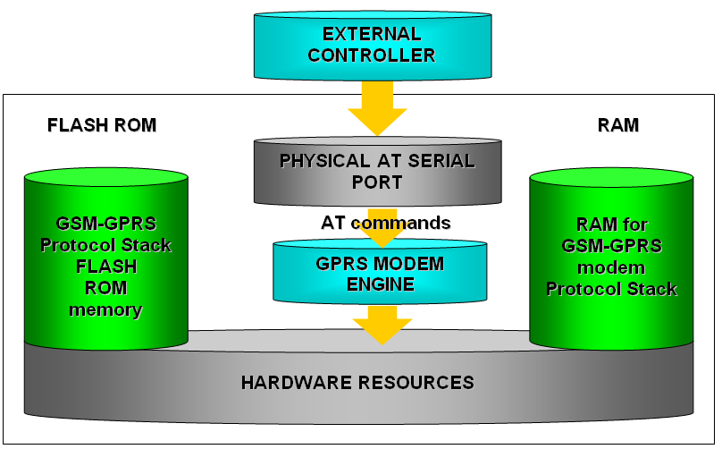
Easy Script in Python
80000ST10020a Rev.13 – 2010-12-03
2.
Easy Script Extension - Python interpreter
2.1.
Overview
The Easy Script Extension is a feature that allows driving the modem internally, writing
the controlling application directly in the Python high level language. A typical
application usually consists of a microcontroller managing several I/O pins on the
module through the AT command interface.
A schematic of such a configuration can be the following:
Reproduction forbidden without Telit Communications S.p.A. written authorization - All Rights Reserved
Page 14 of 117


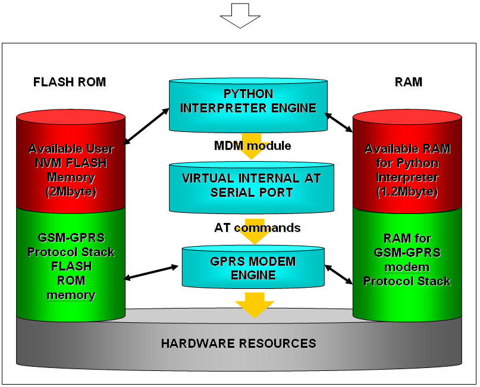
Easy Script in Python
80000ST10020a Rev.13 – 2010-12-03
The Easy Script Extension functionality lets the developer to get rid of the external
controller and further simplify the programmed sequence of operations. The equipped
Python version features the following:
Python script interpreter engine v. 1.5.2+
2MB of Non Volatile Memory space for user scripts and data
1.2 MB RAM reserved for the Python engine
The following depicts a schematic of this approach:
Reproduction forbidden without Telit Communications S.p.A. written authorization - All Rights Reserved
Page 15 of 117


Easy Script in Python
80000ST10020a Rev.13 – 2010-12-03
2.2.
Python 1.5.2+ Copyright Notice
The Python code implemented into the module is copyrighted by Stichting
Mathematisch Centrum, this is the license:
Copyright © 1991-1995 by Stichting Mathematisch Centrum, Amsterdam, The
Netherlands.
All Rights Reserved
Copyright © 1995-2001 Corporation for National Research Initiatives; All Rights
Reserved.
Copyright (c) 2001-2007 Python Software Foundation; All Rights Reserved.
All Rights Reserved are retained in Python.
Permission to use, copy, modify, and distribute this software and its documentation for
any purpose and without fee is hereby granted, provided that the above copyright notice
appear in all copies and that both that copyright notice and this permission notice
appear in supporting documentation, and that the names of Stichting Mathematisch
Centrum or CWI or Corporation for National Research Initiatives or CNRI not be used in
advertising or publicity pertaining to distribution of the software without specific,
written prior permission.
While CWI is the initial source for this software, a modified version is made available by
the Corporation for National Research Initiatives (CNRI) at the Internet address
ftp://ftp.python.org.
STICHTING MATHEMATISCH CENTRUM AND CNRI DISCLAIM ALL WARRANTIES WITH
REGARD TO THIS SOFTWARE, INCLUDING ALL IMPLIED WARRANTIES OF
MERCHANTABILITY AND FITNESS, IN NO EVENT SHALL STICHTING MATHEMATISCH
CENTRUM OR CNRI BE LIABLE FOR ANY SPECIAL, INDIRECT OR CONSEQUENTIAL
DAMAGES OR ANY DAMAGES WHATSOEVER RESULTING FROM LOSS OF USE, DATA
OR PROFITS, WHETHER IN AN ACTION OF CONTRACT, NEGLIGENCE OR OTHER
TORTIOUS ACTION, ARISING OUT OF OR IN CONNECTION WITH THE USE OR
PERFORMANCE OF THIS SOFTWARE.
Reproduction forbidden without Telit Communications S.p.A. written authorization - All Rights Reserved
Page 16 of 117


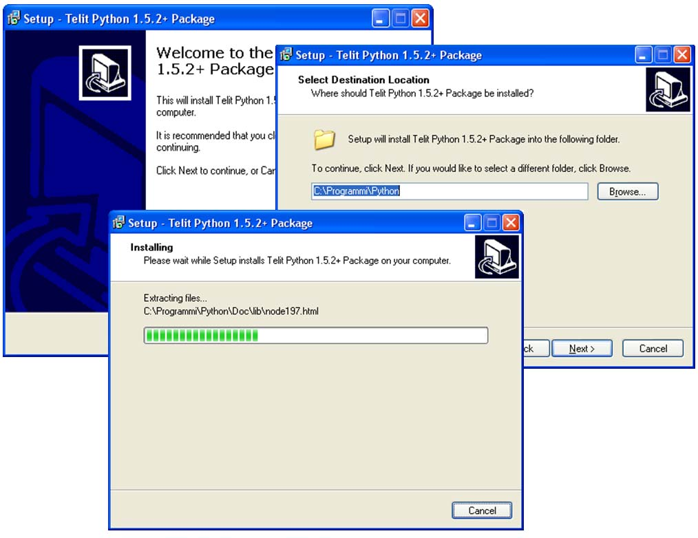
Easy Script in Python
80000ST10020a Rev.13 – 2010-12-03
2.3.
Python installation
In order for the software to function correctly, it is required the use of either Windows
2000 or XP as operating systems.
Contact Telit Technical Support to get the latest version of the PythonWin package
1.5.2+.
The latest version available at the time of writing is TelitPy1.5.2+_V4.1.exe.
To install the Telit Python package you need to execute the executable file
TelitPy1.5.2+_V4.1.exe and accept the default settings. This will install the Python
compiler package. The path to Telit Python package will be C:\Program Files\Python\ ,
which will be automatically set up in the Windows Environmental variables as well.
Reproduction forbidden without Telit Communications S.p.A. written authorization - All Rights Reserved
Page 17 of 117


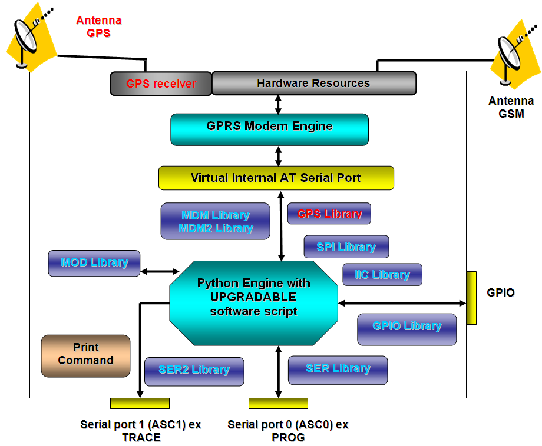
Easy Script in Python
80000ST10020a Rev.13 – 2010-12-03
2.4.
Python implementation description
Python scripts are text files stored in the Telit module NVM (Non Volatile Memory).
There's a file system inside the module that allows to write and read files with different
names on one single level (no subdirectories are supported).
NOTE:
It is possible to run only one Python script at a time.
The Python script is executed in a task with the lowest priority on the Telit module, so
it’s execution won’t interfere with GSM/GPRS normal operations. Furthermore, this
allows serial ports, protocol stack etc. to run independently from the Python script.
The Python script interacts with the Telit module functionalities through several built-
in interfaces, as depicted below:
Reproduction forbidden without Telit Communications S.p.A. written authorization - All Rights Reserved
Page 18 of 117


Easy Script in Python
80000ST10020a Rev.13 – 2010-12-03
NOTE:
Antenna GPS, GPS receiver and GPS Library are available exclusively for the GPS
modules GM862-GPS and GE863-GPS. Moreover, the SER2 Library cannot be used by
GPS modules since their TRACE port is not available.
The MDM interface is the most important one. It allows the Python script to
send AT commands, receive responses and unsolicited indications, send data to
the network and receive data from the network during connections. It is quite
similar to the regular serial port interface on the Telit module. The only
difference being that this interface is an internal software bridge between
Python and module internal AT command handling engine, and not a physical
serial port. All AT commands working on the Telit module are working with this
software interface as well. Some of them have no meaning for this interface,
such as those regarding serial port settings, while others, such as the concept
of hardware flow control, keeps its meaning but it's managed internally.
The MDM2 interface is the second interface between Python and the module
internal AT command handling. It’s purpose is to send AT commands from the
Python script to the module and receive AT responses from the module to the
Python script when the regular MDM built-in module is already in use.
The SER interface lets the Python script to read from and write to the physical
serial port ASC0, usually the default port to send AT commands to the module
(e.g.: to read information from an external device). When Python is running, this
serial port is free to be used by the Python script since it is not used as the AT
command interface; the AT parser, in fact, is mapped into the internal virtual
serial port. No flow control is available from Python on this port.
The SER2 interface lets the Python script to read from and write to the physical
serial port ASC1, usually the default port for tracing and debugging.
The GPIO interface lets the Python script to handle general purpose input
output faster than through AT commands, skipping the command parser and
controlling directly the pins.
The MOD interface is a collection of useful functions.
The IIC interface is an implementation on the Python core of the IIC bus Master.
It allows Python to create one or more IIC bus on the available GPIO pins.
The SPI interface is an implementation on the Python core of the SPI bus
Master. It allows Python to create one or more SPI bus on the available GPIO
pins.
The GPS interface is the interface between Python and the module’s internal
GPS controller. Its purpose is to handle the GPS controller without the use of
dedicated AT commands through the MDM built-in module.
Reproduction forbidden without Telit Communications S.p.A. written authorization - All Rights Reserved
Page 19 of 117


Easy Script in Python
80000ST10020a Rev.13 – 2010-12-03
NOTE:
For debugging purposes, the print command is directly forwarded on the EMMI TX pin
(second serial port) at the baud rate of 115200bps 8N1.
2.5.
Introduction to Python
Python is a dynamic object-oriented multipurpose high level programming language. It
offers strong support for integration featuring several development tools, extensive
standard libraries, and can be learned in a matter of days.
2.5.1.
Data types
There are three groups of data types in Python:
Scalars have the subtypes integer, long integer (with an arbitrary number of
digits), and strings. For example:
i = 1; li = 9999999999L; s = 'Hello'
Sequences contain any number of arbitrary objects in a defined order.
L = [1, 5, 3, 9, 14];
Associative lists (more commonly known as dictionaries) allow the access to
values based on keys. These keys can be arbitrary but uneditable objects. For
example:
D = {'b': 'Python', 'a': 5}; print D['a']
In the above example, the output is 5.
Unlike Pascal, C, C++ or Java, Python is a dynamically typed language. Thus, the
following code is perfectly valid:
a = 7 # 7 (integer)
a = str(2*a) + ' bytes' # '14 bytes' (string)
Reproduction forbidden without Telit Communications S.p.A. written authorization - All Rights Reserved
Page 20 of 117


Easy Script in Python
80000ST10020a Rev.13 – 2010-12-03
NOTE:
In Python the variables are not defined in the script, they appear only when used.
2.5.2.
Operators
Python has the following operators:
Arithmetic and bitwise operators
+ - * / % ** ~ << >> & ^ |
Relational and logical operators
is in < <= > >= == != not and or
Assignments
= += -= *= /= %= **= <<= >>= &= ^= |=
Other operators
() [ ] { } [:] `` . lambda
2.5.3.
Compound statements
Statements that belong to the same logical group have the same graphical indentation:
if a > 0:
b = 1
c = 2
Usually, each statement starts on a new line.
A statement is continued by putting a backslash \ at the end of the line. This isn't
necessary if we’re in the middle of parentheses (or brackets or braces):
my_list = [1, # open bracket, statement continues
['abc', 2], # nested list
-3+6j] # closed outermost bracket, statement ends
print my_list
Reproduction forbidden without Telit Communications S.p.A. written authorization - All Rights Reserved
Page 21 of 117


Easy Script in Python
80000ST10020a Rev.13 – 2010-12-03
2.5.4.
Conditional execution
Python uses if, elif (not elsif or elseif), and else to denote conditional execution of
statements. For example:
if a > b:
print 'a is greater than b.'
elif a < b:
print 'a is lower than b.'
else:
print 'a equals b.'
You can use abbreviated interval tests:
if 2 <= a <= 7:
print 'a is in the interval [2, 7].'
2.5.5.
Loops
Loops in Python are defined by the keywords for and while.
The following example uses a while loop to collect all numbers from 0 to 99 in a list.
numbers = [ ]
i = 0
while i < 100:
numbers.append(i)
i = i + 1 # or i += 1 since Python 2.0
A similar for loop looks like the following:
numbers = [ ]
for i in range(100):
numbers.append(i)
Instead of the explicit loops as above, an implicit loop is possible:
numbers = range(100)
range(100) generates a list of all integers from 0 to 99 (not 100).
Reproduction forbidden without Telit Communications S.p.A. written authorization - All Rights Reserved
Page 22 of 117


Easy Script in Python
80000ST10020a Rev.13 – 2010-12-03
2.5.6.
Resources
Some useful manuals for Python can be found at the following links:
http://www.python.org/doc/current/tut/tut.html
http://www.hetland.org/python/instant-python.php
http://rgruet.free.fr/PQR2.2.html
2.6.
Python core supported features
The Python core version at the time of writing is 1.5.2+ (string methods added to 1.5.2).
You can use all Python statements and almost all Python built-in types and functions in
your development.
Built-in types and functions not
Available modules
supported
(all others are not supported)
complex
marshal
float
imp
docstring
_main_
_builtin_
sys
md5
binascii
Reproduction forbidden without Telit Communications S.p.A. written authorization - All Rights Reserved
Page 23 of 117


Easy Script in Python
80000ST10020a Rev.13 – 2010-12-03
3.
Python Build-in Custom Modules
Several built-in custom modules have been included in the Python core, specifically
developed keeping in mind the hardware environment of the module.
The built-in modules included are:
MDM
interface between Python and the module AT command handling
second interface between Python and the module AT command
MDM2
handling
interface between Python and the module serial port ASC0 direct
SER
handling
interface between Python and the module internal serial port ASC1
SER2
direct handling
interface between Python and the module internal general purpose
GPIO
input output direct handling
MOD
interface between Python and the module miscellaneous functions
custom Inter IC bus software that can be mapped on creation over
IIC
almost any GPIO pin available
custom Serial Protocol Interface bus software that can be mapped on
SPI
creation over almost any GPIO pin available
GPS
interface between Python and the module internal GPS controller
3.1.
CMUX and Python
The CMUX (Converter-Multiplexer) feature has been implemented to ease the use of
Python on Telit modules. The Multiplexer mode creates four virtual channels on one
serial interface and permits to transmit data to four different applications. This makes
it possible to run a Python script and at the same time use CMUX on ASC0 with the
following channels division:
The first CMUX port is reserved for SER module;
The second CMUX port is available for AT command handling in case of MDM2
built-in module not being imported;
The third CMUX port is available for AT command handling;
The fourth CMUX port is used for debug (print statements);
Reproduction forbidden without Telit Communications S.p.A. written authorization - All Rights Reserved
Page 24 of 117


Easy Script in Python
80000ST10020a Rev.13 – 2010-12-03
NOTE:
ASC1 is available for non-GPS products importing the SER2 built-in module (see §
3.5).
3.2.
MDM built-in module
The MDM built-in module is the interface between Python and the module AT
commands parser engine.
You need to use the MDM built-in module if you want to send AT commands and data
from the Python script to the network and receive responses and data from the network
during connections.
In the default configuration, echo (ATE0) is disabled and the response format of result
codes is set to verbose (ATV1).
If you want to use this module you need to import it first:
import MDM
then you can use MDM built-in module methods as in the following example:
a = MDM.send('AT', 0)
b = MDM.sendbyte(0x0d, 0)
c = MDM.receive(10)
which sends 'AT' and receives 'OK'.
More details about MDM built-in module methods can be found in the following
paragraphs.
3.2.1.
MDM.send(string, timeout)
This command sends a string to the AT command interface. The first input parameter
string is a Python string to send to the AT command interface. The second input
parameter timeout is a Python integer, which is measured in 1/10s, and represents the
time to wait for the string to be sent to the AT command interface, with timeout as the
max value. Waiting time is managed by hardware flow control. This method returns
immediately after the string has been sent to the AT interface or after the timeout
period if the whole string could not be sent to the AT interface. The timeout range is (0
÷ 32767). The return value is a Python integer which is -1 if the timeout period has
expired, 1 otherwise.
Example:
Reproduction forbidden without Telit Communications S.p.A. written authorization - All Rights Reserved
Page 25 of 117


Easy Script in Python
80000ST10020a Rev.13 – 2010-12-03
a = MDM.send('AT', 5)
sends the string 'AT' to AT command handling, waiting up to 0.5 s, assigning the return
value to a.
NOTE:
The buffer available for the MDM.send command is 4096 bytes
3.2.2.
MDM.receive(timeout)
This command receives a string from the AT command interface waiting up to the
timeout value, a Python value expressed in 1/10s of second. The return value will be the
first string received no matter the timeout value. Request to Send (RTS) is set to ON by
default. The timeout range is (0 ÷ 32767). The return value is a Python string which
contains the data received or is empty if no data is received within the timeout value.
Example:
a = MDM.receive(15)
Receives a string from AT command handling, waiting up to 1.5 s, assigning the return
value to a.
NOTE:
The buffer available to the MDM.receive command is 4096 bytes
NOTE:
For values of timeout greater than 20 (2 seconds) it is suggested to use a Python cycle,
MDM.read() method and MOD.secCounter() method. The following is an example:
res = ''
timeout = MOD.secCounter() + TIMEOUT_VALUE
res = MDM.read()
while((len(res) == 0) and (MOD.secCounter() < timeout)):
res = res + MDM.read()
Reproduction forbidden without Telit Communications S.p.A. written authorization - All Rights Reserved
Page 26 of 117


Easy Script in Python
80000ST10020a Rev.13 – 2010-12-03
3.2.3.
MDM.read()
This command receives a string from the AT command interface without waiting for it.
Request to Send (RTS) is set to ON. It has no input parameter.
The return value is a Python string which contains the data received at the moment of
command execution. The value might be empty if no data is received.
Example:
a = MDM.read()
Receives a string from AT command handling, assigning the return value to a.
NOTE:
The buffer available for MDM.read command is 4096 bytes4
3.2.4.
MDM.sendbyte(byte, timeout)
This command sends one byte to the AT command interface. The first input parameter
byte can be zero or any Python byte to send to the AT command interface. The second
input parameter timeout is a Python integer, expressed in 1/10 of second, and
represents the max time to wait for the byte to be sent to the AT command interface.
Waiting time is managed by hardware flow control. This method returns immediately
after the byte has been sent to the AT interface or after the timeout period if the byte
could not be sent to the AT interface. The timeout range is (0 ÷ 32767).
The return value is a Python integer which is -1 if the timeout expired, 1 otherwise.
Example:
b = MDM.sendbyte(0x0d, 0)
Sends the byte 0x0d (carriage return <CR>) to the AT commands handling, without
waiting and assigning the return value to b.
3.2.5.
MDM.receivebyte(timeout)
This command receives one byte from the AT commands interface waiting up to the
timeout value. Request to Send (RTS) is set to ON. The input parameter timeout is a
Python integer which is measured in 1/10s, and represents the maximum amount of
time to wait for the byte from the AT command interface. The timeout range is (0 ÷
32767).
Reproduction forbidden without Telit Communications S.p.A. written authorization - All Rights Reserved
Page 27 of 117


Easy Script in Python
80000ST10020a Rev.13 – 2010-12-03
The return value is a Python integer which is the byte value received or -1 if no data is
received within the timeout value. The return value can also be zero.
Example:
b = MDM2.receivebyte(20)
receives a byte from AT command handling, waiting for it up to 2.0 s, assigning the
return value to b.
3.2.6.
MDM.readbyte()
This command receives a byte from the AT command interface without waiting for it.
Request to Send (RTS) is set to ON. It has no input parameter.
The return value is a Python integer which is the byte value received at the moment of
command execution or is -1 if no data is received. The return value can also be zero.
Example:
b = MDM.readbyte()
receives a byte from AT command handling, assigning the return value to b.
3.2.7.
MDM.getDCD()
This command gets Carrier Detect (DCD) from the AT command interface. It has no
input parameter.
The return value is a Python integer which is either 0 if DCD is OFF or 1 if DCD is ON.
Example:
cd = MDM.getDCD()
gets DCD from AT command handling, assigning the return value to cd.
3.2.8.
MDM.getCTS()
This command gets Clear to Send (CTS) from the AT command interface. It has no input
parameter.
The return value is a Python integer which is either 0 if CTS is set to OFF or 1 if CTS is
set to ON.
Example:
Reproduction forbidden without Telit Communications S.p.A. written authorization - All Rights Reserved
Page 28 of 117


Easy Script in Python
80000ST10020a Rev.13 – 2010-12-03
cts = MDM.getCTS()
gets CTS from AT command handling, assigning the return value to cts.
3.2.9.
MDM.getDSR()
This command gets Data Set Ready (DSR) from the AT command interface. It has no
input parameter.
The return value is a Python integer which is either 0 if DSR is OFF or 1 if DSR is ON.
Example:
dsr = MDM.getDSR()
gets DSR from AT command handling, assigning the return value to dsr.
3.2.10.
MDM.getRI()
This command gets Ring Indicator (RI) from the AT command interface. It has no input
parameter.
The return value is a Python integer which is either 0 if RI is set to OFF or 1 if RI is set
to ON.
Example:
ri = MDM.getRI()
gets RI from AT command handling, assigning the return value to ri.
3.2.11.
MDM.setRTS(RTS_value)
This command sets Request to Send (RTS) in the AT command interface. The input
parameter RTS_value is a Python integer which is either 0 if setting RTS to OFF or 1 if
setting RTS to ON.
No return value.
Example:
MDM.setRTS(1)
sets RTS to ON in AT command handling.
Reproduction forbidden without Telit Communications S.p.A. written authorization - All Rights Reserved
Page 29 of 117


Easy Script in Python
80000ST10020a Rev.13 – 2010-12-03
3.2.12.
MDM.setDTR(DTR_value)
This command sets Data Terminal Ready (DTR) in the AT command interface. The input
parameter DTR_value is a Python integer which is either 0 if setting DTR to OFF or 1 if
setting DTR to ON.
No return value.
Example:
MDM.setDTR(0)
sets DTR to OFF in AT command handling.
Reproduction forbidden without Telit Communications S.p.A. written authorization - All Rights Reserved
Page 30 of 117


Easy Script in Python
80000ST10020a Rev.13 – 2010-12-03
3.3.
MDM2 built-in module
MDM2 built-in module is the second interface between Python and the module internal
AT command handling. It is used to send AT commands from Python script to module
and receive AT responses from module to Python script when the classic MDM built-in
module already in use.
MDM2 built-in module is independent from activation of CMUX on ASC0. In case you
have enabled CMUX on ASC0 (AT#CMUXSCR=1) then the second CMUX port will be
dedicated to MDM2 and no AT command handling will be possible on that port.
Remember that first CMUX port is reserved for SER module and fourth CMUX port is in
use for debug (print statements).
Though MDM2 built-in module is independent from activation of CMUX on ASC0, it
works on the second instance of AT parser in the same way the second CMUX port does.
So the rules on AT commands that apply on the first and second CMUX ports (AT parser
instances) apply on MDM and MDM2 as well.
See "AT Commands Reference Guide" and "CMUX User Guide" for details on availability
of AT commands on all instances and for the rules on parallel execution of AT
commands on two instances.
In the default configuration, echo (ATE0) is disabled and the response format of result
codes is set to verbose (ATV1).
If you want to use MDM2 built-in module you need to import it first:
import MDM2
than you can use MDM2 built-in module methods like in the following example:
a = MDM2.send('AT', 0)
b = MDM2.sendbyte(0x0d, 0)
c = MDM2.receive(10)
which sends 'AT' and receives 'OK'.
More details about MDM2 built-in module methods can be found in the following
paragraphs.
3.3.1.
MDM2.send(string, timeout)
Reproduction forbidden without Telit Communications S.p.A. written authorization - All Rights Reserved
Page 31 of 117


Easy Script in Python
80000ST10020a Rev.13 – 2010-12-03
This command sends a string to the AT command interface. The first input parameter
string is a Python string that will be send to the AT command interface. The second
input parameter timeout is a Python integer which is measured in 1/10s, and
represents the time of waiting for the string to be sent to the AT command interface,
with maximum value of timeout. Waiting time is managed by hardware flow control.
This method returns immediately after the string has been sent to the AT interface or
after the timeout period if the whole string could be sent to the AT interface. The
timeout range is (0 ÷ 32767).
The return value is a Python integer which is -1 if timeout expired otherwise is 1.
Example:
a = MDM2.send('AT', 5)
sends string 'AT' to AT command handling, possibly waiting for 0.5 s, assigning the
return value to a.
NOTE:
The buffer available for MDM.send command is 4096 bytes
3.3.2.
MDM2.receive(timeout)
This command receives a string from the AT command interface waiting for it until
timeout is expired. The return value will be the first string received no matter of how
long the timeout is. Request to Send (RTS) is set to ON. The input parameter timeout is
a Python integer, which is measured in 1/10s, and represents the max time to wait for
the string from the AT command interface. The timeout range is (0 ÷ 32767).
The return value is a Python string which is an empty string if timeout has expired
without any data received otherwise the string contains data received.
Example:
a = MDM2.receive(15)
receives a string from AT command handling, possibly waiting for it for 1.5 s, assigning
the return value to a.
NOTE:
The buffer available for MDM2.receive command is 4096 bytes.
Reproduction forbidden without Telit Communications S.p.A. written authorization - All Rights Reserved
Page 32 of 117


Easy Script in Python
80000ST10020a Rev.13 – 2010-12-03
NOTE:
For values of timeout greater than 20 (2 seconds) it is suggested to use a Python cycle,
MDM2.read() method and MOD.secCounter() method. The following is an example:
res = ''
timeout = MOD.secCounter() + TIMEOUT_VALUE
res = MDM2.read()
while((len(res) == 0) and (MOD.secCounter() < timeout)):
res = res + MDM2.read()
3.3.3.
MDM2.read()
This command receives a string from the AT command interface without waiting for it.
Request to Send (RTS) is set to ON. It has no input parameter.
The return value is a Python string which is an empty string if no data received
otherwise the string contains data received in the moment when command is activated.
Example:
a = MDM2.read()
receives a string from AT command handling, assigning the return value to a.
NOTE:
The buffer available for MDM2.read command is 4096 bytes
3.3.4.
MDM2.sendbyte(byte, timeout)
This command sends a byte to the AT command interface. The first input parameter
byte is any Python byte that will be to send to the AT command interface. It can also be
zero.
The second input parameter timeout is a Python integer which is the value in 1/10 s to
wait for the byte to be sent to the AT command interface before timeout expires.
Waiting time is managed by hardware flow control. This method returns immediately
after the byte has been sent to the AT interface or after the timeout period if the byte
could not be sent to the AT interface. The timeout range is (0 ÷ 32767).
The return value is a Python integer which is -1 if timeout expired otherwise is 1.
Reproduction forbidden without Telit Communications S.p.A. written authorization - All Rights Reserved
Page 33 of 117


Easy Script in Python
80000ST10020a Rev.13 – 2010-12-03
Example:
b = MDM2.sendbyte(0x0d, 0)
sends byte 0x0d, that is <CR>, to AT command handling, without waiting, assigning the
return value to b.
3.3.5.
MDM2.receivebyte(timeout)
This command receives a byte from the AT command interface up to the timeout value.
Request to Send (RTS) is set to ON. The input parameter timeout is a Python integer
which is measured in 1/10s, and represents the max time to wait for the string from the
AT command interface. The timeout range is (0 ÷ 32767).
The return value is a Python integer which is the byte value received or -1 if no data is
received within the timeout value. The return value can also be zero.
Example:
b = MDM2.receivebyte(20)
receives a byte from AT command handling, possibly waiting for it for 2.0 s, assigning
the return value to b.
3.3.6.
MDM2.readbyte()
This command receives a byte from the AT command interface without waiting for it.
Request to Send (RTS) is set to ON. It has no input parameter.
The return value is a Python integer which is - the byte value received or -1 if no data is
received within the timeout value. The return value can also be zero.
Example:
b = MDM2.readbyte()
receives a byte from AT command handling, assigning the return value to b.
3.3.7.
MDM2.getDCD()
This command gets Carrier Detect (DCD) from the AT command interface. It has no
input parameter.
Reproduction forbidden without Telit Communications S.p.A. written authorization - All Rights Reserved
Page 34 of 117


Easy Script in Python
80000ST10020a Rev.13 – 2010-12-03
The return value is a Python integer which is 0 if DCD is set to OFF or 1 if DCD is set to
ON.
Example:
cd = MDM2.getDCD()
gets DCD from AT command handling, assigning the return value to cd.
3.3.8.
MDM2.getCTS()
This command gets Clear to Send (CTS) from the AT command interface. It has no input
parameter.
The return value is a Python integer which is either 0 if CTS is set to OFF or 1 if CTS is
set to ON.
Example:
cts = MDM2.getCTS()
gets CTS from AT command handling, assigning the return value to cts.
3.3.9.
MDM2.getDSR()
This command gets Data Set Ready (DSR) from the AT command interface. It has no
input parameter.
The return value is a Python integer which is either 0 if DSR is set to OFF or 1 if DSR is
set to ON.
Example:
dsr = MDM2.getDSR()
gets DSR from AT command handling, assigning the return value to dsr.
3.3.10.
MDM2.getRI()
This command gets Ring Indicator (RI) from the AT command interface. It has no input
parameter.
The return value is a Python integer which is 0 if RI is set to OFF or 1 if RI is set to ON.
Reproduction forbidden without Telit Communications S.p.A. written authorization - All Rights Reserved
Page 35 of 117


Easy Script in Python
80000ST10020a Rev.13 – 2010-12-03
Example:
ri = MDM2.getRI()
gets RI from AT command handling, assigning the return value to ri.
3.3.11.
MDM2.setRTS(RTS_value)
This command sets Request to Send (RTS) in the AT command interface. The input
parameter RTS_value is a Python integer which is 0 if setting RTS to set to OFF or 1 if
setting RTS to set to ON.
It has no return value.
Example:
MDM2.setRTS(1)
sets RTS to ON in AT command handling.
3.3.12.
MDM2.setDTR(DTR_value)
This command sets Data Terminal Ready (DTR) in the AT command interface. The input
parameter DTR_value is a Python integer which is 0 if setting DTR to set to OFF or 1 if
setting DTR to set to ON.
It has no return value.
Example:
MDM2.setDTR(0)
sets DTR to OFF in AT command handling.
3.4.
SER built-in module
The SER built-in module is an interface between the Python core and the device serial
port over the RXD/TXD pins direct handling. You need to use the SER built-in module if
you want to send data from the Python script to the serial port and to receive data from
the serial port ASC0 to the Python script. This serial port handling module can be used,
for example, to interface the module with an external device (such as a GPS) and
Reproduction forbidden without Telit Communications S.p.A. written authorization - All Rights Reserved
Page 36 of 117


Easy Script in Python
80000ST10020a Rev.13 – 2010-12-03
read/send its data (e.g. NMEA). The SER built-in module has also been lately improved
with the possibility to control physical lines.
If you want to use SER built-in module you need to import it:
import SER
then you can use its methods, like in the following example:
a = SER.set_speed('9600')
b = SER.send('test')
c = SER.sendbyte(0x0d)
d = SER.receive(10)
which sends 'test' followed by <CR> and receives data waiting for 1 second.
More details about SER built-in module methods can be found in the following
paragraphs.
3.4.1.
SER.send(string)
This command sends a string to the serial port TXD/RXD. The input parameter string is
a Python string that will be sent to the serial port ASC0.
The return value is a Python integer which is -1 if an error occurred otherwise is 1.
Example:
a = SER.send('test')
sends the string 'test' to the serial port ASC0 handling, assigning the return value to a.
NOTE:
the buffer available for the SER.send(string) command is 4096 bytes
3.4.2.
SER.receive(timeout)
This command receives a string from the serial port TXD/RXD waiting for it until the
timeout is expired. The return value will be the first string received no matter of how
long the timeout is. The input parameter timeout is a Python integer, which is
measured in 1/10s, and represents the max time to wait for the string from the serial
port ASC0. The timeout range is (0 ÷ 32767).
The return value is a Python string which is an empty string if timeout expired without
any data received, otherwise it is the string consisting in the data received.
Reproduction forbidden without Telit Communications S.p.A. written authorization - All Rights Reserved
Page 37 of 117


Easy Script in Python
80000ST10020a Rev.13 – 2010-12-03
Example:
a = SER.receive(15)
receives a string from serial port ASC0 handling, waiting for it up to 1.5 s, assigning the
return value to a.
NOTE:
For values of timeout greater than 20 (2 seconds) it is suggested to use a Python cycle,
SER.read() method and MOD.secCounter() method. The following is an example:
res = ''
timeout = MOD.secCounter() + TIMEOUT_VALUE
res = SER.read()
while((len(res) == 0) and (MOD.secCounter() < timeout)):
res = res + SER.read()
3.4.3.
SER.read()
This command receives a string from the serial port TXD/RXD without waiting for it. It
has no input parameter. The return value is a Python string which is an empty string if
no data received, otherwise it is the string containing the data received at command
execution time.
Example:
a = SER.read()
receives a string from the serial port ASC0 handling, assigning the return value to a.
NOTE:
the buffer available for the SER.receive(timeout) and SER.read() commands is 4096
bytes.
3.4.4.
SER.sendbyte(byte)
This command sends a byte to the serial port TXD/RXD. The input parameter byte is any
Python byte that will be sent to the serial port. It can also be zero.
The return value is a Python integer which is -1 if an error occurred otherwise is 1.
Reproduction forbidden without Telit Communications S.p.A. written authorization - All Rights Reserved
Page 38 of 117


Easy Script in Python
80000ST10020a Rev.13 – 2010-12-03
Example:
b = SER.sendbyte(0x0d)
sends the byte 0x0d, that corresponds to <CR>, to the serial port ASC0 handling,
assigning the return value to b.
3.4.5.
SER.receivebyte(timeout)
This command receives a byte from the serial port TXD/RXD waiting for it until the
timeout is expired. The return value will be the first byte received no matter of how long
the timeout is. The input parameter timeout is a Python integer, which is measured in
1/10s, and represents the max time to wait for the string from serial port ASC0. The
timeout range is (0 ÷ 32767).
The return value is a Python integer which is -1 if timeout expired without any data
received otherwise is the byte value received. It can also be zero.
Example:
b = SER.receivebyte(20)
receives a byte from serial port ASC0 handling, waiting for it for 2.0 s, assigning the
return value to b.
3.4.6.
SER.readbyte()
This command receives a byte from the serial port TXD/RXD without waiting for it. It
has no input parameter.
The return value is a Python integer which is -1 if no data received, otherwise is the
byte value received. It can also be zero.
Example:
b = SER.readbyte()
receives a byte from serial port ASC0 handling, assigning the return value to b.
3.4.7.
SER.set_speed(speed, <char format>)
This command sets the serial port TXD/RXD speed. The default serial port TXD/RXD
speed is 9600. The input parameter speed is a Python string which is the value of the
serial port speed. It can assume the same values as the +IPR command.
Reproduction forbidden without Telit Communications S.p.A. written authorization - All Rights Reserved
Page 39 of 117


Easy Script in Python
80000ST10020a Rev.13 – 2010-12-03
NOTE:
sending the +IPR command to the device does not affect the physical serial port, you
must use this function to set the speed of the port when using the Python engine.
The optional parameter <char format> is a Python string that represents the character
format to be used:
the first is the number of bits per char (7 or 8), then the parity setting (N - none, E- even,
O- odd) and the number of stop bits (1 or 2). The default value is "8N1".
The return value is a Python integer which is -1 if an error occurred otherwise is 1.
Example:
b = SER.set_speed('115200')
sets the serial port ASC0 speed to 115200, assigning the return value to b.
NOTE:
for the PythonWin version previous to TelitPy1.5.2+_V2.1.exe and for version of Python
on the module previous to Ver6.03.000, a different syntax is implemented depending on
the development environment.
- PythonWin application: SER.SetSpeed(speed) without char format parameter.
- Python installed on module: SER.set_speed(speed, char format) with char format
not an optional parameter.
3.4.8.
SER.setDCD(DCD_value)
This command sets Carrier Detect (DCD) on the serial port ASC0. The input parameter
DCD_value is a Python integer which is either 0 if DCD is set to OFF or 1 if DCD is set to
ON. It has no return value.
Example:
SER.setDCD(1)
sets DCD to ON in ASC0.
Reproduction forbidden without Telit Communications S.p.A. written authorization - All Rights Reserved
Page 40 of 117


Easy Script in Python
80000ST10020a Rev.13 – 2010-12-03
3.4.9.
SER.setCTS(CTS_value)
This command sets Clear to Send (CTS) on the serial port ASC0. The input parameter
CTS_value is a Python integer which is either 0 if CTS is set to OFF or 1 if CTS is set to
ON.
It has no return value.
Example:
SER.setCTS(1)
sets CTS to ON in ASC0.
3.4.10.
SER.setDSR(DSR_value)
This command sets Data Set Ready (DSR) on the serial port ASC0. The input parameter
DSR_value is a Python integer which is either 0 if DSR is set to OFF or 1 if DSR is set to
ON. It has no return value.
Example:
SER.setDSR(1)
sets DSR to ON in ASC0.
3.4.11.
SER.setRI(RI_value)
This command sets Ring Indicator (RI) on the serial port ASC0. The input parameter
RI_value is a Python integer which is either 0 if RI is set to OFF or 1 if RI is set to ON. It
has no return value.
Example:
SER.setRI(1)
sets RI to ON in ASC0.
Reproduction forbidden without Telit Communications S.p.A. written authorization - All Rights Reserved
Page 41 of 117


Easy Script in Python
80000ST10020a Rev.13 – 2010-12-03
3.4.12.
SER.getRTS()
This command gets Request to Send (RTS) from the serial port ASC0. It has no input
parameter.
The return value is a Python integer which is either 0 if RTS is set to OFF or 1 if RTS is
set to ON.
Example:
rts = SER.getRTS()
gets RTS from ASC0, assigning the return value to rts.
3.4.13.
SER.getDTR()
This command gets Data Terminal Ready (DTR) from the serial port ASC0. It has no
input parameter.
The return value is a Python integer which is either 0 if DTR is set to OFF or 1 if DTR is
set to ON.
Example:
dtr = SER.getDTR()
gets DTR from ASC0, assigning the return value to dtr.
Reproduction forbidden without Telit Communications S.p.A. written authorization - All Rights Reserved
Page 42 of 117


Easy Script in Python
80000ST10020a Rev.13 – 2010-12-03
3.5.
SER2 built-in module
The SER2 built-in module is the interface between Python and the module internal
serial port ASC1 direct handling. It is used to send data from the Python script to the
serial port ASC1 and to receive data from the serial port ASC1 to the Python script.
NOTE:
The SER2 built-in module is available only for non-GPS products.
If you want to use the SER2 built-in module you need to import it first:
import SER2
than you can use SER2 built-in module methods like in the following example:
a = SER2.send('test')
b = SER2.sendbyte(0x0d)
c = SER2.receive(10)
which sends 'test' followed by <CR> and receives data waiting for one second.
More details about SER2 built-in module methods can be found the following
paragraphs.
When the SER2 bulit-in module is imported, ASC1 will not be available for trace and
debug; in order to have these functionalities you should activate CMUX on ASC0.
If you are using CMUX on ASC0 (AT#CMUXSCR=1) then the fourth CMUX port will be
available for trace and debug.
3.5.1.
SER2.send(string)
This command sends a string to the serial port ASC1. The input parameter string is a
Python string that will be send to serial port ASC1.
The return value is a Python integer which is either -1 if an error occurred otherwise is
1.
Example:
a = SER2.send('test')
Reproduction forbidden without Telit Communications S.p.A. written authorization - All Rights Reserved
Page 43 of 117


Easy Script in Python
80000ST10020a Rev.13 – 2010-12-03
sends string 'test' to serial port ASC1 handling, assigning the return value to a.
NOTE:
The buffer available for the SER2.send command is 4096 bytes.
3.5.2.
SER2.receive(timeout)
This command receives a string from the serial port ASC1 waiting for it until timeout is
expired. The return value will be the first string received no matter of how long the
timeout is. The input parameter timeout is a Python integer, which is measured in 1/10s,
and represents the max time to wait for the string from the serial port ASC1. The
timeout range is (0 ÷ 32767).
The return value is a Python string which is an empty string if the timeout expired
without any data received, otherwise it is the string consisting in the data received.
Example:
a = SER2.receive(15)
receives a string from the serial port ASC1 handling, waiting for it up to 1.5 s, assigning
the return value to a.
NOTE:
For values of timeout greater than 20 (2 seconds) it is suggested to use a Python cycle,
SER2.read() method and MOD.secCounter() method. The following is an example:
res = ''
timeout = MOD.secCounter() + TIMEOUT_VALUE
res = SER2.read()
while((len(res) == 0) and (MOD.secCounter() < timeout)):
res = res + SER2.read()
3.5.3.
SER2.read()
This command receives a string from the serial port ASC1 without waiting for it. It has
no input parameter.
Reproduction forbidden without Telit Communications S.p.A. written authorization - All Rights Reserved
Page 44 of 117


Easy Script in Python
80000ST10020a Rev.13 – 2010-12-03
The return value is a Python string which is an empty string if no data was received,
otherwise it is the string containing the data received at command execution time.
Example:
a = SER2.read()
receives a string from the serial port ASC1 handling, assigning the return value to a.
NOTE:
the buffer available for the SER2.receive(timeout) and SER2.read() commands is 4096
bytes.
3.5.4.
SER2.sendbyte(byte)
This command sends a byte to the serial port ASC1. The input parameter byte is any
Python byte that will be sent to the serial port ASC1. It can also be zero.
The return value is a Python integer which is -1 if an error occurred otherwise it is 1.
Example:
b = SER2.sendbyte(0x0d)
sends the byte 0x0d, that corresponds to <CR>, to the serial port ASC1 handling,
assigning the return value to b.
3.5.5.
SER2.receivebyte(timeout)
This command receives a byte from the serial port ASC1 waiting for it until the timeout
is expired. The return value will be the first byte received no matter of how long the
timeout is. The input parameter timeout is a Python integer which is measured in 1/10s,
and represents the max time to wait for the string from the serial port ASC1. The
timeout range is (0 ÷ 32767).
The return value is a Python integer which is -1 if timeout expired without any data
received otherwise it is the byte value received. It can also be zero.
Example:
b = SER2.receivebyte(20)
Reproduction forbidden without Telit Communications S.p.A. written authorization - All Rights Reserved
Page 45 of 117


Easy Script in Python
80000ST10020a Rev.13 – 2010-12-03
receives a byte from serial port ASC1 handling, waiting for it for 2.0 s, assigning the
return value to b.
3.5.6.
SER2.readbyte()
This command receives a byte from the serial port ASC1 without waiting for it. It has no
input parameter.
The return value is a Python integer which is -1 if no data was received, otherwise it is
the byte value received. It can also be zero.
Example:
b = SER2.readbyte()
receives a byte from the serial port ASC1 handling, assigning the return value to b.
3.5.7.
SER2.set_speed(speed, <format>)
This command sets the serial port ASC1 speed. The default ASC1 serial port speed is
9600. The first input parameter speed is a Python string which is the value of the serial
port speed. It can be in the range from '300' to '115200'. The second input parameter
format is optional and is a Python string which is the serial port format. It can be ‘8N1’,
‘8N2’, ‘8E1’, ‘8O1’, ‘7N1’, ‘7N2’, ‘7E1’, ‘7O1’, or ‘8E2’.
The return value is a Python integer which is -1 if an error occurred otherwise is 1.
Example:
b = SER2.set_speed('115200')
sets serial port ASC1 speed to 115200, assigning the return value to b.
3.6.
GPIO built-in module
Reproduction forbidden without Telit Communications S.p.A. written authorization - All Rights Reserved
Page 46 of 117


Easy Script in Python
80000ST10020a Rev.13 – 2010-12-03
The GPIO built-in module1 is an interface between the Python core and the module
internal general purpose input output direct handling. The GPIO built-in module is used
to set GPIO values from the Python script and to read GPIO values from the Python
script. You can control the GPIO pins also by sending internal 'AT#GPIO' commands
using the MDM module, but using the GPIO module is faster because no command
parsing is involved, therefore its use is recommended.
NOTE:
The Python core does not verify if the pins are already used for other purposes (IIC
module or SPI module) by other functions, it's the customer responsibility to ensure
that no conflict over pins occurs.
If you want to use the GPIO built-in module you need to import it first:
import GPIO
then you can use its methods as in the following example:
a = GPIO.getIOvalue(5)
b = GPIO.setIOvalue(4, 1)
this reads the GPIO 5 value and sets GPIO 4 to the output with value 1.
More details about GPIO built-in module methods are in the following paragraphs.
3.6.1.
GPIO.setIOvalue(GPIOnumber, value)
Sets the output value of a GPIO pin. The first input parameter GPIOnumber is a Python
integer which is the number of the GPIO. The second input parameter value is a Python
integer which is the output value. It can be 0 or 1.
The return value is a Python integer which is -1 if an error occurred otherwise is 1.
Example:
b = GPIO.setIOvalue(4, 1)
sets GPIO 4 to output with value 1, assigning the return value to b.
3.6.2.
GPIO.getIOvalue(GPIOnumber)
This method is used to get the input or output value of a GPIO. The input parameter
GPIOnumber is a Python integer which is the number of the GPIO.
1 Note: In case of a data call, PythonWin simulates the GPIO with dummy commands.
Reproduction forbidden without Telit Communications S.p.A. written authorization - All Rights Reserved
Page 47 of 117


Easy Script in Python
80000ST10020a Rev.13 – 2010-12-03
The return value is a Python integer which is -1 if an error occurred otherwise it is the
input or output value. It can be either 0 or 1.
Example:
b = GPIO.getIOvalue(5)
gets the GPIO 5 input or output value, assigning the return value to b.
3.6.3.
GPIO.setIOdir(GPIOnumber, value, direction)
This method is used to set the direction of a GPIO. The first input parameter
GPIOnumber is a Python integer which is the number of the GPIO. The second input
parameter value is a Python integer which is the output value. It can be either 0 or 1. It
is only used if the direction value is 1.
NOTE:
when the direction value is not 1, although the parameter value has no meaning, it is
necessary to assign it one of the two possible values: 0 or 1
The third input parameter direction is a Python integer which is the direction value. It
can be either 0 for input or 1 for output or 2 for alternate function or 3 for tristate pull
down. Refer to AT#GPIO command in "AT Commands Reference Guide" for further
notes.
The return value is a Python integer which is -1 if an error occurred otherwise is 1.
Example:
c = GPIO.setIOdir(4, 0, 0)
sets GPIO 4 to input with the value parameter having no meaning, and assigning the
return value to c.
3.6.4.
GPIO.getIOdir(GPIOnumber)
This method gets the direction of a GPIO. The input parameter GPIOnumber is a Python
integer which is the number of the GPIO.
The return value is a Python integer which is -1 if an error occurred otherwise is
direction value. It is 0 for input or 1 for output or 2 for alternate function or 3 for
tristate pull down.
Example:
Reproduction forbidden without Telit Communications S.p.A. written authorization - All Rights Reserved
Page 48 of 117


Easy Script in Python
80000ST10020a Rev.13 – 2010-12-03
d = GPIO.getIOdir(7)
gets GPIO 7 direction, assigning the return value to d.
3.6.5.
GPIO.getADC(adcNumber)
This method gets ADC value in the same way as AT#ADC command. The input
parameter adcNumber is a Python integer which represents the ADC number that will
be read and converted in voltage.
The return value is a Python integer which is -1 if an error occurred otherwise the
converted voltage is returned in mV.
Example:
mV = GPIO.getADC(2)
gets ADC number 2 input voltage, assigning the return value in mV.
3.6.6.
GPIO.setDAC(enable, value)8
This method sets the DAC value in the same way as the AT#DAC command. The first
input parameter enable is a Python integer and can assume values 0 or 1. If it is set to 1
enables DAC output otherwise if it is set to 0 disabled DAC output. The second input
parameter value is a Python integer and represents the scale factor of output voltage
and can assume values in the range 0-1023.
The return value is a Python integer that has value -1 if an error occurred otherwise it
has value 1.
Example:
res = GPIO.setDAC(1, 512)
sets DAC output voltage at half the range, assigning the return value to res.
3.6.7.
GPIO.setVAUX(vauxNumber, enable)8
This method enables or disables the VAUX. It is equivalent to the AT#VAUX command.
The first input parameter vauxNumber is a Python integer that represents VUAX
number that will be enabled or disabled.
The second input parameter enable is a Python integer that can assume value 1 in
order to enable VAUX output or 0 if VAUX output should be disabled.
Reproduction forbidden without Telit Communications S.p.A. written authorization - All Rights Reserved
Page 49 of 117


Easy Script in Python
80000ST10020a Rev.13 – 2010-12-03
The return value is a Python integer that has value -1 if an error occurred otherwise it
has the value 1.
Example:
res = GPIO.setVAUX(1, 1)
enables VAUX number 1 output, assigning the return value to res.
3.6.8.
GPIO.getAXE()9
This method is used to get the hands free status value. It is equivalent to the AT#AXE
command. There is no input parameter.
The return value is a Python integer that is either 0 if a hand free is not connected or 1
if a hand free is connected.
Example:
hf = GPIO.getAXE()
gets the AXE value, assigning the return value to hf.
3.6.9.
GPIO.setSLED(status, onDuration, offDuration)
Sets the status led configuration values. IT is equivalent to the AT#SLED command. The
first input parameter status is a Python integer that represents the configuration of
status led and can assume the following values:
0 - ALWAYS OFF
1 - ALWAYS ON
2 - AUTO
3 - BLINKING
The second input parameter onDuration is a Python integer which is the period of ON
configuration of status led in 1/10 s. The third input parameter offDuration is a Python
integer which is the period of OFF configuration of status led in 1/10 s.
The return value is a Python integer which is -1 if an error occurred otherwise it is 1.
Example:
res = GPIO.setSLED(3, 10, 90)
Reproduction forbidden without Telit Communications S.p.A. written authorization - All Rights Reserved
Page 50 of 117


Easy Script in Python
80000ST10020a Rev.13 – 2010-12-03
sets status led configuration to blinking with 1s in ON period and 9s in OFF period,
assigning the return value to res.
3.6.10.
GPIO.getCBC()9
This method gets the charger status and battery voltage values in the same way as the
AT#CBC command. There are no input parameters.
The return value is a Python tuple formatted in the following way:
(chargerStatus, batteryVoltage).
First element of tuple is a Python integer which is charger status:
0 - charger not connected
1 - charger connected and charging
2 - charger connected and charging process completed
Second element of tuple is a Python integer which is battery voltage in mV.
Example:
cbc = GPIO.getCBC()
gets charger status and battery voltage values, assigning the return value to cbc tuple.
3.7.
MOD built-in module
The MOD built-in module is an interface between Python and the module
miscellaneous functions. You need to use the MOD built-in module if you want to
handle time functions in Python scripts.
If you want to use MOD built-in module you need to import it first:
import MOD
then you can use its methods as in the following example:
MOD.sleep(15)
this blocks the Python script execution for 1.5s.
More details about MOD built-in module methods are in the following paragraphs.
Reproduction forbidden without Telit Communications S.p.A. written authorization - All Rights Reserved
Page 51 of 117


Easy Script in Python
80000ST10020a Rev.13 – 2010-12-03
3.7.1.
MOD.secCounter()
This method returns a Python long integer which is the value of seconds elapsed since
1 January 2000. This method is useful for timers generation in Python scripts. There
are no input parameters.
The AT+CCLK command is used to read and to set the current date and time.
Here are some useful constants:
1 day = 86400 seconds
1 year = 31536000 or 31622400 seconds
30 years from 1 January 1970 to 1 January 2000 = 946684800 seconds
(simply add this constant if you need seconds elapsed since 1 January 1970)
Example:
a = MOD.secCounter()
returns seconds elapsed since 1 January 2000.
3.7.2.
MOD.sleep(sleeptime)
Blocks Python script execution for a given time returning the resources to the system.
The input parameter sleeptime is a Python integer which is measured in 1/10s and
used to block script execution for given value. The timeout range is (0 ÷ 32767). No
return value.
Example:
MOD.sleep(15)
blocks Python script for 1.5 s.
NOTE:
the parameter sleeptime can assume integer values in the following range [0,32767]
3.7.3.
MOD.watchdogEnable(timeout)
This method protects the system against script blocking by performing an automatic
reboot of the module when the watchdog reaches a determined value. The input
Reproduction forbidden without Telit Communications S.p.A. written authorization - All Rights Reserved
Page 52 of 117


Easy Script in Python
80000ST10020a Rev.13 – 2010-12-03
parameter timeout is an integer, which is measured in seconds and represents the
time to wait before executing the software restart. The timeout range is (1 ÷
2147483647).
No return value.
Example:
MOD.watchdogEnable(50)
after 50sec from execution of this command module will be rebooted.
3.7.4.
MOD.watchdogReset()
Restarts the watchdog counter that has been previously activated with the command
MOD.watchdogEnable(timeout) preventing in this way the reboot of the module. It
should be added in every part of the script that can cause a script blocking (loops, etc)
and is used only when Python watchdog is enabled. No input value. No return value.
Example:
MOD.watchdogReset()
Restarts Python watchdog counter.
3.7.5.
MOD.watchdogDisable()
Disables the Python watchdog that has been previously activated with the command
MOD.watchdogEnable(timeout). Python watchdog should be disabled before scripts
critical lines such as import, since it takes a long time and then enabled again after. No
input value. No return value.
Example:
MOD.watchdogDisable()
Disables Python watchdog.
3.7.6.
MOD.powerSaving(timeout)
This new feature allows Python to put the system in power saving mode2 for a certain
period or until an external event3 occurs in the same way as AT command AT+CFUN=0
2 ATTENTION: when the script debugging is activated, the module will not enter in power saving mode
Reproduction forbidden without Telit Communications S.p.A. written authorization - All Rights Reserved
Page 53 of 117


Easy Script in Python
80000ST10020a Rev.13 – 2010-12-03
does. The input parameter timeout is an integer, which is measured in seconds and
represents time for which the Python script remains blocked. Python script will exit
power saving mode when the determined value of timeout is reached or after
unsolicited signal. If the timeout has negative value Python script will exit from power
saving mode only when an external event occurs. The timeout range is (-2147483648 ÷
2147483647).
No return value.
Example:
MOD.powerSaving(100)
Python script will exit power saving mode after 100sec or when an external event
occurs.
3.7.7.
MOD.powerSavingExitCause()
This command can be executed after MOD.powerSaving(timeout) and gives the cause of
unblocking the Python script. No input parameter.
The return value is a Python integer which is 0 if Python script has exit power saving
mode after an external event otherwise it is 1 if Python script has exit power saving
mode after the timeout is reached.
Example:
MOD.powerSavingExitCause()
gets the cause of exiting of Python script from the power saving mode
3.7.8.
MOD.encBase64(dataToCode)
This method converts the string dataToCode in another string of ASCII characters in
base64 coding ready in lines of 76 characters.
The input parameter dataToCode is the Python string to be converted in base64 coding.
The return value is a Python string which is the converted data in base64 coding already
ready in lines of 76 characters with carriage return and newline chars according to
MIME RFC 2045. If the converted data exceeds 16000 characters the return value is an
empty string.
Available in version 10.00.xx3.
Example:
3 an external event e.g.: URC unsolicited message (ex. RING of incoming calls) or putting RTS high (when it goes
back to low the power saving mode remains disabled)
Reproduction forbidden without Telit Communications S.p.A. written authorization - All Rights Reserved
Page 54 of 117


Easy Script in Python
80000ST10020a Rev.13 – 2010-12-03
dataCoded = MOD.encBase64(dataToCode)
converts the string dataToCode to another string in base64 coding assigning the return
value to dataCoded.
3.8.
IIC built-in module
IIC built-in module4 is an implementation on the Python core of the IIC bus5 Master (No
Multi-Master) using the "bit-banging" technique.
You need to use IIC built-in module if you want to create one or more IIC bus on the
available GPIO pins. This IIC bus handling module is mapped on creation on two GPIO
pins that will become the Serial Data and Serial Clock pins of the bus. It can be created
more than one IIC bus over different pins and the pins used must not be used for other
purposes.
NOTE:
Python core does not verify if the pins are already used for other purposes (SPI module
or GPIO module) by other functions, it's the customer responsibility to ensure that no
conflict over pins occurs.
If you want to use IIC built-in module you need to import it first:
import IIC
then you can create the new bus over the GPIO pins (for example over the pins GPIO3,
GPIO4) and then use IIC built-in module methods like in the following example:
IICbus = IIC.new(3, 4, 0x50)
IICbus.init()
res = IICbus.readwrite('test', 10)
which sends 'test' and receives a string of 10 bytes from IIC bus device at address 0x50,
assigning it to res.
NOTE:
you must provide external pull-up on SDA line since the line is working as open
collector, on the other hand SCLK is driven with a complete push pull.
More details about IIC built-in module object methods are in the following paragraphs.
4 Note: IIC module cannot be simulated in Python Win
5 With the following clock frequency: 0KHz min, 20KHz typical (idle mode)
Reproduction forbidden without Telit Communications S.p.A. written authorization - All Rights Reserved
Page 55 of 117


Easy Script in Python
80000ST10020a Rev.13 – 2010-12-03
3.8.1.
IIC.new(SDA_pin, SCL_pin, <ADDR>)
This command creates a new IIC bus object on the GPIO pins number. The input
parameter SDA_pin, SCL_pin are Python bytes, which are the GPIO pin number where
the SDA (Serial Data) and SCL (Serial Clock) lines are mapped. Optional parameter
ADDR is the address of IIC bus device.
The return value is the Python custom IIC bus object pointer, which then shall be used
to interface with the IIC bus created.
Example:
myIIC1 = IIC.new(3,4,0x50)
This creates one IIC bus over the lines SDA=GPIO3 and SCL=GPIO4 with default address
0x50.
NOTE:
available pins for the IIC bus are:
- module family GM862: GPIO1 and GPIO2 are not available
- all other module families: all GPIO available (on previous firmware versions than
7.03.xx1 GPIO1 is not available)
3.8.2.
IIC.init()
This command does the first pin initialisation on the IIC bus previously created. It has
no input parameter. The return value is a Python integer that is -1 if an error occurred
otherwise is 1.
Example:
status = myIIC1.init()
Reproduction forbidden without Telit Communications S.p.A. written authorization - All Rights Reserved
Page 56 of 117


Easy Script in Python
80000ST10020a Rev.13 – 2010-12-03
3.8.3.
IIC.readwrite(string, read_len)
This command can send a string or receive a string of read_len bytes from from IIC bus
device at address addr. First input parameter string is Python character while the
second parameter read_len is a Python integer used in process of reading data from
the IIC bus and can assume values in the range from 0 to 254.
The return value is a Python string which contains received data.
NOTE:
IIC device address is 7 bits + 1 bit R/W (device address on the most significant part of
byte and R/W on less significant bit of byte).
NOTE:
In a read and write application IIC.readwrite() method must be called separately once
for read and once for write.
NOTE:
In an application that uses IIC.readwrite() method the parameter ADDR in IIC.new()
method is mandatory.
Example of use:
#start of I2C example for a particular I2C device
import IIC
import MOD
I2C_SDA = 3 # GPIO used for SDA pin
I2C_SCL = 4 # GPIO used for SCL pin
I2C_ADDR = 0x50 # myIIC1 address
NUM_REGS = 8 # max # of registers
myIIC1 = IIC.new(I2C_SDA, I2C_SCL, I2C_ADDR)
status = myIIC1.init()
#MOD.sleep(5)
print ' Writing from ADDR = 0x08, DATA = "Telit" '
if myIIC1.readwrite('\x08'+'Telit',0) == -1:
print 'Error acknowledged'
#MOD.sleep(5)
ret = myIIC1.readwrite('\x08', 14)
# Random read
print ' RANDOM READ FROM ADDR = 0x08, 14 bytes: %s' % ret
#MOD.sleep(5)
Reproduction forbidden without Telit Communications S.p.A. written authorization - All Rights Reserved
Page 57 of 117


Easy Script in Python
80000ST10020a Rev.13 – 2010-12-03
print ' Writing DATA= "hello!" from ADDR = 0x00'
myIIC1.readwrite('\x00'+ 'hello!', 0)
#MOD.sleep(5)
print ' SETTING CURRENT ADDRESS = 0x00'
if myIIC1.readwrite('\x00',0) == -1:
print 'Error acknowledged'
#MOD.sleep(5)
ret = myIIC1.readwrite('', 22) # Current address read
print ' CURRENT ADDR READ = 0x00, 22 bytes: %s' % ret
MOD.sleep(5)
ret = myIIC1.readwrite('\x00', 254) # Current address read
print ' read 254 bytes with readwrite: %s' % ret
3.8.4.
IIC.sendbyte(byte)
NOTE:
We suggest to use the new readwrite (2.8.3) method to send bytes or strings.
Sends a byte to the IIC bus previously created. The input parameter byte is a Python
byte which is the byte to be sent to the IIC bus. The start and stop condition on the bus
are added by the function.
The return value is a Python integer which is -1 if an error occurred otherwise is 1 the
byte has been acknowledged by the slave.
Example:
Supposing to set:
bus1 = IIC.new(3,4)
bus2 = IIC.new(5,6)
a = bus1.init()
then:
a = bus1.sendbyte(123)
sends byte 123 to the IIC bus , assigning the return result value to a.
3.8.5.
IIC.send(string)
NOTE:
We suggest to use the new readwrite (2.8.3) method to send bytes or strings.
Reproduction forbidden without Telit Communications S.p.A. written authorization - All Rights Reserved
Page 58 of 117


Easy Script in Python
80000ST10020a Rev.13 – 2010-12-03
Sends a string to the IIC bus previously created. The input parameter string is a Python
string which is the string to send to the IIC bus.
The return value is a Python integer which is -1 if an error occurred otherwise is 1 if all
bytes of the string have been acknowledged by the slave.
Example:
a = bus1.send('test')
sends string 'test' to the IIC bus , assigning the return result value to a.
3.8.6.
IIC.dev_read(addr, len)
NOTE:
We suggest to use the new readwrite (2.8.3) method to send bytes or strings.
Receives a string of len bytes from IIC bus device at address addr.
The return value is a Python string which is containing data received.
Example:
a = bus1.dev_read(114,10)
receives a string of 10 bytes from IIC bus device at address 114, assigning it to a.
3.8.7.
IIC.dev_write(addr, string)
NOTE:
We suggest to use the new readwrite (2.8.3) method to send bytes or strings.
Sends a string to the IIC bus device at address addr.
The return value is a Python string which is 1 if data is acknowledged correctly, -1
otherwise.
Example:
a = bus1.dev_write(114,'123456789')
sends the string '123456789' to the IIC bus device at address 114, assigning the result
to a.
Reproduction forbidden without Telit Communications S.p.A. written authorization - All Rights Reserved
Page 59 of 117


Easy Script in Python
80000ST10020a Rev.13 – 2010-12-03
3.8.8.
IIC.dev_gen_read(addr, start, len)
NOTE:
We suggest to use the new readwrite (2.8.3) method to send bytes or strings.
Receives a string of len bytes from IIC bus device whose address is addr, starting from
address start. The return value is a Python string which is containing data received.
Example:
a = bus1.dev_gen_read(114,122, 10)
receives a string of 10 bytes from IIC bus device at address 114, starting from address
122 assigning it to a.
3.8.9.
IIC.dev_gen_write(addr, start, string)
NOTE:
We suggest to use the new readwrite (2.8.3) method to send bytes or strings.
Sends a string to the IIC bus device whose address is addr, starting from address start.
The return value is a Python string which is 1 if data is acknowledged correctly, -1
otherwise.
Example:
a = bus1.dev_gen_write(114, 112, '123456789')
sends the string '123456789' to the IIC bus device at address 114, starting from address
112, assigning the result to a.
Reproduction forbidden without Telit Communications S.p.A. written authorization - All Rights Reserved
Page 60 of 117


Easy Script in Python
80000ST10020a Rev.13 – 2010-12-03
3.9.
SPI built-in module
SPI built-in module6 is an implementation on the Python core of the SPI bus7 Master
using the "bit-banging" technique. You need to use SPI built-in module if you want to
create one or more SPI bus on the available GPIO pins.
This SPI bus handling module is mapped on creation on three or more GPIO pins that
will become the Serial Data In/Out and Serial Clock pins of the bus, plus a number of
optional chip select pins up to 8. It can be created more than one SPI bus over different
pins and these pins must not be used for other purposes.
NOTE:
Python core does not verify if the pins are already used for other purposes (IIC module
or GPIO module) by other functions, it's the customer responsibility to ensure that no
conflict over pins occurs.
If you want to use SPI built-in module you need to import it first:
import SPI
the functions to use are: create your SPI object (new), initialize (init) and transfer data
(readwrite) like in the example:
mySPIobject = SPI.new(3, 4 ,5, 6)
mySPIobject.init(0, 0, 0, 0)
d = mySPIobject.readwrite(’test’, 4)
sends 'test' and receives byte from the SPI bus device.
More details about SPI built-in module object methods are in the following paragraphs.
6 Note: SPI module cannot be simulated in Python Win
7 With the following clock frequency: 0KHz min, 20KHz typical (idle mode)
Reproduction forbidden without Telit Communications S.p.A. written authorization - All Rights Reserved
Page 61 of 117


Easy Script in Python
80000ST10020a Rev.13 – 2010-12-03
3.9.1.
SPI.new(SCLK_pin, MOSI_pin, MISO_pin, <SS0>, <SS1>,…<SS7>)
This command creates a new SPI bus object on the corresponding GPIO pins. The input
parameter SCLK_pin, MOSI_pin and MISO_pin are Python bytes that represent the
GPIO pin number where the SCLK (Serial CLocK), MOSI (Master Output Slave Input),
MISO (Master Input Slave Output) lines are mapped.
The input parameter SSi_line is a mandatory Python byte if the SPI device needs to be
selected by Slave Select line: it is the GPIO pin number where the SSi (ith Slave Select)
line is mapped. Up to 8 Slave Select lines can be defined.
The SS_pin is optional because not all SPI devices have a Slave Select line, otherwise
named Chip Select (CS) line.
The return value is the Python custom SPI object pointer that will be used further to
interface with this specific SPI object created.
Example:
mySPIobject = SPI.new(6, 7, 8, 9, 10)
Creates an SPI object “mySPIobject” where SCLK=GPIO6, MOSI=GPIO7, MISO=GPIO8
and SS0=GPIO9, SS1=GPIO10
NOTE:
available pins for the SPI bus are:
- module family GM862: GPIO1 and GPIO2 are not available
- all other module families: GPIO1 is not available
Reproduction forbidden without Telit Communications S.p.A. written authorization - All Rights Reserved
Page 62 of 117


Easy Script in Python
80000ST10020a Rev.13 – 2010-12-03
3.9.2.
SPI.init (CPOL, CPHA, <SSPOL>, <SS>)
This command performs the initialization on the SPI bus previously created, and can be
reused as many time as necessary if some of its parameters need changes during work.
The first input parameter CPOL represents clock polarity and is controlled in the
following way:
CPOL = 0 - clock polarity low
CPOL = 1 - clock polarity high
The second input parameter CPHA represents clock phase transmission and is
controlled in the following way:
CPHA = 0 - data bit is clocked/latched on the first edge of the SCLK.
CPHA = 1 - data bit is clocked/latched on the second edge of the SCLK.
The combinations of polarity and phases are often referred to as SPI modes.
Third parameter SSPOL is optional and represents the Slave Select Polarity and can
assume the following values:
SSPOL = 0 - polarity low (default)
SSPOL = 1 - polarity high
Fourth parameter SS is optional and represents the Default Slave Select line number to
use among the already defined slave select (SS) lines for this SPI object and then it can
assume values from 0 to 7.
SS = unused - means that if not SS settled in readwrite() parameter’s function,
no SS will be moved.
SS = 0…7 – Defined the default SS line to move if not SS settled in readwrite()
parameter’s function.
The return value is a Python integer, which is -1 if an error occurred, otherwise is 1.
Example:
status = mySPIobject.init(0, 0, 0)
In this initialization no SS line is defined as default, and no SS line will be moved if not
set in readwrite function.
status = mySPIobject.init(0, 0, 0, 1)
Reproduction forbidden without Telit Communications S.p.A. written authorization - All Rights Reserved
Page 63 of 117


Easy Script in Python
80000ST10020a Rev.13 – 2010-12-03
In this initialization the SS=1 refers to the use of SS1, already defined in SPI.new(6, 7, 8,
9, 10) as GPIO10.
status = mySPIobject.init(0, 0, 0, 0)
In this initialization the SS=0 refers to the use of SS0, already defined in SPI.new(6, 7, 8,
9, 10) as GPIO9.
3.9.3.
SPI.readwrite(string, <read_len>, <SS>)
This command sends string and receives read_len bytes at the same time from SPI bus
device at Slave Select line number SS.
The first input parameter string is a Python string while the second optional8 parameter
read_len is a Python integer used only for reading data and can assume values in the
range from 0 to 254.
The read_len value includes also the bytes transmitted.
For example if the string to be sent has 6 bytes then:
if read_len = 3 spi receive and save only the first 3 bytes, the others 3 bytes
received during
transmission of the other 3 bytes left are lost.
if read_len = 10 the spi receive the first 6 bytes together wit the sent bytes and
then send 0x00 another 4 times to complete the 10 bytes to receive.
The third optional input parameter SS, if defined, selects which of SS line number
defined in SPI.new will be used and, if not defined, the default Slave Select line number
in SPI.init, if any, will be used.
The return value is a Python string that contains (read_len bytes) of sent and/or
received data, in case an error occurs return value will be –1 or NULL if is memory
error.
Example:
myString = mySPIobject.readwrite(‘hello’, 10)
send the string "hello" and receives a string of 10 bytes from the SPI device, assigning
it to myString
Example of writing and reading of a memory in a particular SPI device (addressable by
a Slave Select pin)
8 In case of read operation this parameter is mandatory
Reproduction forbidden without Telit Communications S.p.A. written authorization - All Rights Reserved
Page 64 of 117


Easy Script in Python
80000ST10020a Rev.13 – 2010-12-03
#start of SPI example
import SPI
import MOD
import MDM
import GPIO
CMD_WRITE = '\x02'
#this value is not the value for any
#SPI device, but for tested one only!
CMD_READ = '\x03'
#this value is not the value for any
#SPI device, but for tested one only!
CMD_RESET = '\xC0'
REG_ADDR_X = '\x0E'
#this value is not the value for any
#SPI device, but for tested one only!
REG_ADDR_Y = '\x0F'
#this value is not the value for any
#SPI device, but for tested one only!
TWO_READ_ACCESS = '\x00\x00' # string of the length equal to
#the number of bytes to receive
MySPI1 = SPI.new (3,10,8,6) # (SCLK, MOSI, MISO, SS0)
MySPI1.init (0,0,0,0) # (CPOL, CPHA, SSPOL, SS)
# Power Up, Reset and Clock ON routine for the SPI
# device can also be implemented from outside
MySPI1.readwrite (CMD_WRITE + REG_ADDR_Y + '\xAC')
# write 0xAC in REG_ADDR_Y
# values of myString [0] and myString [1] correspond to
# the status output while writing
myString = MySPI1.readwrite (CMD_READ + REG_ADDR_X, 4)
print "DATA VALUE AT ADDR_X and _Y =",hex(ord(myString[2]))+' and \
'+ hex(ord(myString[3]))
# does the same as previous: this is to maintain the backward
# compatibility with the past version of the readwrite method
myString = MySPI1.readwrite(CMD_READ + REG_ADDR_X + TWO_READ_ACCESS,4)
# read first byte (cmd) plus 128 bytes starting from the last position
ret = MySPI1.readwrite (CMD_READ, 129)
i = 0
print "STATUS =",hex(ord(ret[i]))
while (i < 128):
print "REGISTER[",hex(i),"]:",hex(ord(ret[i + 1]))
i = i + 1
#end of SPI example
Reproduction forbidden without Telit Communications S.p.A. written authorization - All Rights Reserved
Page 65 of 117


Easy Script in Python
80000ST10020a Rev.13 – 2010-12-03
3.9.4.
SPI.sendbyte(byte, <SS_number>)
NOTE:
We suggest to use the new readwrite (3.9.3) method to send bytes or strings.
Sends a byte to the SPI bus previously created addressed for the Slave number
SS_number whose Slave Select signal is activated. The input parameter byte is a
Python byte which is the byte to be sent to the SPI bus. Optional parameter SS_number
is a Python byte representing the Slave number to be activated; if not present no slave
line is activated.
The return value is a Python integer which is -1 if an error occurred otherwise is 1 the
byte has been sent.
Example:
a = bus3.sendbyte(123)
sends byte 123 to the SPI bus , assigning the return result value to a.
b=bus4.sendbyte(111,1)
sends byte 111 to the SPI bus activating the Slave Select line of the SS1 device (in our
example GPIO10).
3.9.5.
SPI.readbyte(<SS_number>)
NOTE:
We suggest to use the new readwrite (3.9.3) method to send bytes or strings.
Receives a byte from the SPI bus device at Slave Select number SS_number. Input
optional parameter SS_number is a Python byte representing the Slave number to be
activated; if not present no slave line is activated.
The return value is a byte (integer) received from the SPI bus device if no data is
received the return value will be zero.
Example:
a = bus3.readbyte()
receives a byte from the SPI bus , assigning the return result value to a.
Reproduction forbidden without Telit Communications S.p.A. written authorization - All Rights Reserved
Page 66 of 117


Easy Script in Python
80000ST10020a Rev.13 – 2010-12-03
b = bus4.readbyte(1)
receives a byte from the SPI bus device on SS1 line, assigning the return result value to
b.
3.9.6.
SPI.send(string, <SS_number>)
NOTE:
We suggest to use the new readwrite (3.9.3) method to send bytes or strings.
Sends a string to the SPI bus previously created. The input parameter string is a Python
string which is the string to send to the SPI bus. Optional parameter SS_number is a
Python byte representing the Slave number to be activated; if not present no slave line
is activated.
The return value is a Python integer which is -1 if an error occurred otherwise is 1 if all
bytes of the string have been sent.
Example:
a = bus3.send('test')
sends string 'test' to the SPI bus , assigning the return result value to a.
3.9.7.
SPI.read(len, <SS_number>)
NOTE:
We suggest to use the new readwrite (3.9.3) method to send bytes or strings.
Receives a string of len bytes from SPI bus device at Slave Select number SS_number.
Input optional parameter SS_number is a Python byte representing the Slave number
to be activated; if not present no slave line is activated.
The return value is a Python string that contains received data.
Example:
a = bus4.read(10,0)
receives a string of 10 bytes from SPI bus device on SS0 line, assigning it to a.
Reproduction forbidden without Telit Communications S.p.A. written authorization - All Rights Reserved
Page 67 of 117


Easy Script in Python
80000ST10020a Rev.13 – 2010-12-03
3.10.
GPS9 built-in module
GPS built-in module is the interface between Python and module internal GPS
controller. It is used in order to handle GPS controller without dedicated AT commands
through MDM built-in module.
If you want to use GPS built-in module you need to import it first:
import GPS
After this you can start using GPS built-in module methods like in the following
example:
position = GPS.getActualPosition()
gets a string with position information formatted in the same way as AT$GPSACP
response.
More details about GPS built-in module methods can be found in the following
paragraphs.
3.10.1.
GPS. powerOnOff(newStatus)
This method powers ON/OFF GPS controller in the same way as AT command:
AT$GPSP.
The input parameter newStatus is a Python integer and can have the following values:
0 to power OFF GPS controller
1 to power ON GPS controller.
There is no return value.
Example:
GPS.powerOnOff(0)
GPS controller is powered OFF.
9 Available only for the following modules: GM862-GPS, GE863-GPS.
Reproduction forbidden without Telit Communications S.p.A. written authorization - All Rights Reserved
Page 68 of 117


Easy Script in Python
80000ST10020a Rev.13 – 2010-12-03
3.10.2.
GPS.getPowerOnOff()
This method gets GPS controller current power ON/OFF status. It has no input
parameter.
The return value is a Python integer which is 0 if GPS controller is powered off or 1 if
GPS controller is powered on.
Example:
status = GPS.getPowerOnOff()
gets GPS controller current power ON/OFF status, assigning the return value to status.
3.10.3.
GPS.resetMode(mode)
This method resets GPS controller in the same way as AT command: AT$GPSR. The
input parameter mode is a Python integer and can have the following values:
0 for Hardware reset
1 for Coldstart (No Almanac, No Ephemeris);
2 for Warmstart (No Ephemeris);
3 for Hotstart (with stored Almanac and Ephemeris)
The return value is a Python integer which is -1 if an error occurred otherwise is 1.
Example:
res = GPS.resetMode(1)
executes a cold restart of GPS controller, assigning the return value to res.
3.10.4.
GPS.getAntennaVoltage()
This method gets GPS antenna supply voltage in the same way as AT command:
AT$GPSAV.
It has no input parameter.
The return value is a Python integer which represents antenna supply voltage in mV.
Example:
mV = GPS.getAntennaVoltage()
gets GPS antenna supply voltage, assigning the return value to mV.
Reproduction forbidden without Telit Communications S.p.A. written authorization - All Rights Reserved
Page 69 of 117


Easy Script in Python
80000ST10020a Rev.13 – 2010-12-03
3.10.5.
GPS.getAntennaCurrent()
This method gets GPS antenna current consumption in the same way as AT command:
AT$GPSAI.
It has no input parameter.
The return value is a Python integer which represents antenna current consumption in
mA.
Example:
mA = GPS.getAntennaCurrent()
gets GPS antenna current consumption, assigning the return value to mA.
3.10.6.
GPS.getActualPosition()
This method gets GPS last position information stored in the same way as with AT
command: AT$GPSACP. It has no input parameter.
The return value is a Python string which is the last position information formatted in
the same way as for AT$GPSACP command response.
Example:
lastPosition = GPS.getActualPosition()
gets GPS last position information, assigning the return value to lastPosition.
3.10.7.
GPS.powerSavingMode(mode, pushToFixPeriod)
This method sets GPS controller power saving mode in the same way as AT command
AT$GPSPS.
The first input parameter mode is a Python integer and can have the following values:
0 for Power Saving disabled – Continuous Power (default);
1 for Trickle Power activated;
2 for Push To Fix Mode enabled.
The second input parameter pushToFixPeriod is a Python integer which is the value of
push to fix period in seconds used when mode=2. If mode= 0 or mode= 1 this parameter
has no meaning and can be set to any value.
The return value is a Python integer which is -1 if an error occurred otherwise is 1.
Example:
res = GPS.powerSavingMode(2, 15)
Reproduction forbidden without Telit Communications S.p.A. written authorization - All Rights Reserved
Page 70 of 117


Easy Script in Python
80000ST10020a Rev.13 – 2010-12-03
sets GPS controller in power saving mode 2 with push to fix period of 15 seconds,
assigning the return value to res.
3.10.8.
GPS.powerSavingWakeUp()
This command wakes up GPS controller while in power saving mode in the same way
as AT command AT$GPSWK.
It has no input parameter.
The return value is a Python integer which is -1 if an error occurred otherwise is 1.
Example:
res = GPS.powerSavingWakeUp()
wakes up GPS controller while in power saving, assigning the return value to res.
3.10.9.
GPS.getLastGGA()
This command gets GPS last GGA NMEA sentence stored. It has no input parameter.
The return value is a Python string which is the last GGA NMEA sentence formatted
according to NMEA specification.
Example:
gga = GPS.getLastGGA()
gets last GGA NMEA sentence, assigning the return value to gga.
3.10.10.
GPS.getLastGLL()
This command gets GPS last GLL NMEA sentence stored. It has no input parameter.
The return value is a Python string which is the last GLL NMEA sentence formatted
according to NMEA specification.
Example:
gll = GPS.getLastGLL()
gets last GLL NMEA sentence, assigning the return value to gll.
Reproduction forbidden without Telit Communications S.p.A. written authorization - All Rights Reserved
Page 71 of 117


Easy Script in Python
80000ST10020a Rev.13 – 2010-12-03
3.10.11.
GPS.getLastGSA()
This command gets GPS last GSA NMEA sentence stored. It has no input parameter.
The return value is a Python string which is the last GSA NMEA sentence formatted
according to NMEA specification.
Example:
gsa = GPS.getLastGSA()
gets last GSA NMEA sentence, assigning the return value to gsa.
3.10.12.
GPS.getLastGSV()
This command gets GPS last GSV NMEA sentence stored. It has no input parameter.
The return value is a Python string which is the concatenation of the last GSV NMEA
sentences formatted according to NMEA specification.
Example:
gsv = GPS.getLastGSV()
gets last GSV NMEA sentence, assigning the return value to gsv.
3.10.13.
GPS.getLastRMC()
This command gets GPS last RMC NMEA sentence stored. It has no input parameter.
The return value is a Python string which is the last RMC NMEA sentence formatted
according to NMEA specification.
Example:
rms = GPS.getLastRMC()
gets last RMC NMEA sentence, assigning the return value to rmc.
3.10.14.
GPS.getLastVTG()
This command gets GPS last VTG NMEA sentence stored. It has no input parameter.
The return value is a Python string which is the last VTG NMEA sentence formatted
according to NMEA specification.
Reproduction forbidden without Telit Communications S.p.A. written authorization - All Rights Reserved
Page 72 of 117


Easy Script in Python
80000ST10020a Rev.13 – 2010-12-03
Example:
vtg = GPS.getLastVTG()
gets last VTG NMEA sentence, assigning the return value to vtg.
3.10.15.
GPS.getPosition()
This command gets GPS last position stored in numeric format. It has no input
parameter.
The return value is a Python tuple formatted in the following way
(latitude, latNorS, longitude, lonEorW)
where:
The first element of tuple is a Python integer which is latitude in (degrees *
10000000), that is in degrees with 10000000 scale factor.
The second element of tuple in a Python string which is ‘N’ for north or ‘S’ for
south.
The third element of tuple is a Python integer which is longitude in (degrees *
10000000), that is in degrees with 10000000 scale factor.
Fourth element of tuple in a Python string which is ‘E’ for east or ‘W’ for west.
If GPS controller has no position information the following tuple is returned:
(0, ‘’, 0, ‘’).
Example:
pos = GPS.getPosition()
gets last position stored, assigning the return value to pos.
Reproduction forbidden without Telit Communications S.p.A. written authorization - All Rights Reserved
Page 73 of 117


Easy Script in Python
80000ST10020a Rev.13 – 2010-12-03
4.
Python Script Operations
4.1.
Executing a Python script
The steps required to have a script running by the Python engine of the module are:
write the Python script;
compile the Python script (optional);
download the (compiled) Python script into the module NVM;
enable the Python script;
execute the Python script.
Reproduction forbidden without Telit Communications S.p.A. written authorization - All Rights Reserved
Page 74 of 117


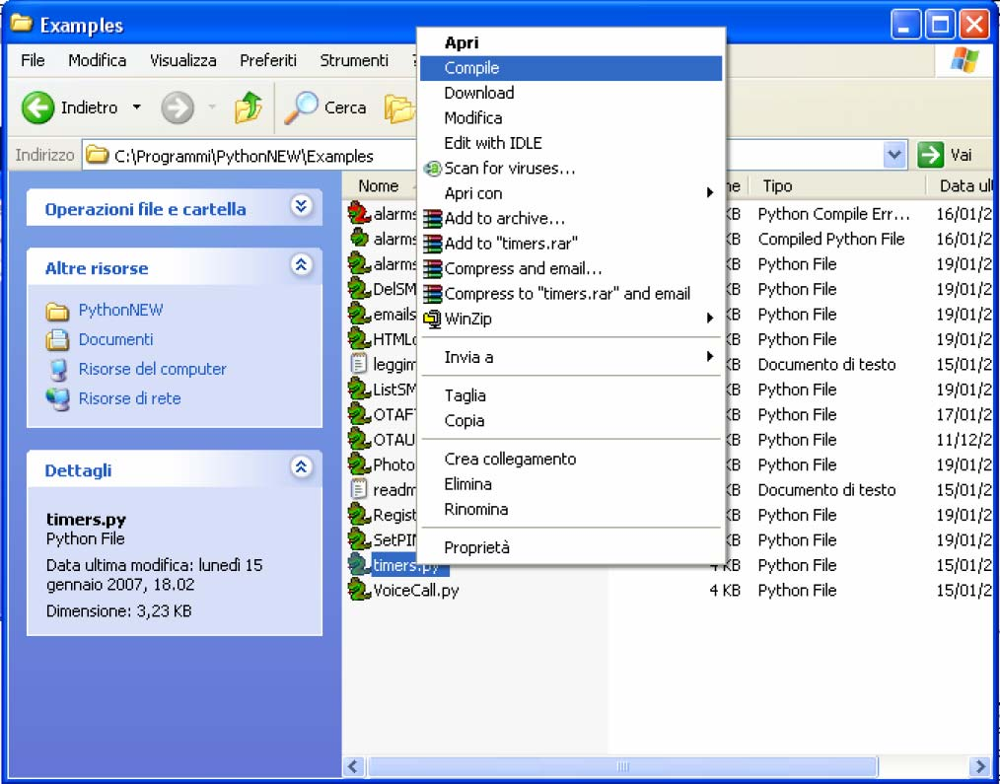
Easy Script in Python
80000ST10020a Rev.13 – 2010-12-03
4.1.1.
Compiling the Python script
Telit has created a new version of PythonWin 4.1 in order to reduce the compilation
time of Python scripts on module (during the development phase) and to improve other
Python features as well:
A new "compile" option has been added to the contextual menu accessible by right
clicking on the Python script. This option compiles the file and saves it on the same
directory with a *.pyo extension. Compilation results and further errors will appear in
the active window.
Compilation in PythonWin can also be performed with the shortcut key F6.
In case of an error during the compilation process, a new file (with a red Python icon)
and associated error log are created with a *.pye extension. The DOS window will
Reproduction forbidden without Telit Communications S.p.A. written authorization - All Rights Reserved
Page 75 of 117


Easy Script in Python
80000ST10020a Rev.13 – 2010-12-03
remain open in case of compilation errors, otherwise it’s closed at the end of the
compilation.
When the Python script is compiled in PythonWin, further errors will be reported in the
Interactive Window, while in the Python script window they’ll be indicated by the cursor.
A "download"[1] option has been added to the contextual menu of compiled and simple
text Python files, which implement a reliable download of Python scripts on the module.
Shortcut key F3 in PythonWin will start a quick search of selected text in the active file.
4.1.2.
Write Python script
A Python script is a simple text file, it can be written with any text editor but for your
convenience a complete Integrated Development Environment (IDE) is included in a
software package that Telit provides called Telit Python Package.
Remembering the supported features described in 2.6, it is simple to write the script
and test it directly from the IDE.
The following is the "Hello Word" short Python script that sends the simplest AT
command to the AT command parser, waits for response and then ends.
import MDM
print 'Hello World!'
result = MDM.send('AT\r', 0)
print result
c = MDM.receive(10)
print c
4.1.3.
Download Python script
Command: AT#WSCRIPT=“< script_name >“,< size >,< know-how >
< script_name >: file name
< size >: file size (number of bytes)
< know-how >: know how protection, 1 = on, 0 = off (default)
The script, the compiled script, any text or binary file, can be downloaded on the
module using the #WSCRIPT command. In order to guarantee your company know-how,
you have the option to hide the script text so that the #RSCRIPT command does not
return the text of the script and keeps it "confidential", you can see the name of the
script only using the #LSCRIPT command.
[1] In order to avoid unwanted compilation on the module we advise you to download only Python files with .pyo as
extension.
Reproduction forbidden without Telit Communications S.p.A. written authorization - All Rights Reserved
Page 76 of 117


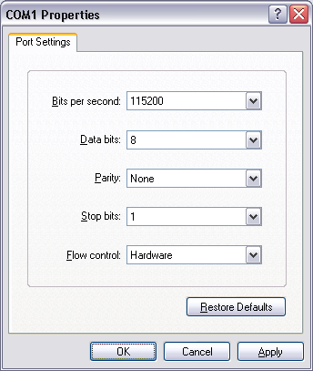
Easy Script in Python
80000ST10020a Rev.13 – 2010-12-03
Remember that if you chose to hide the script text, it is your responsibility to keep the
information about what is executed on the module; for example, by naming the script
based on the application and script version.
In order to download the (compiled) script, you have to choose a name for your script on
the module, taking care of the following:
the extension for scripts is .py10;
the maximum length allowed is 16 characters;
script names are case sensitive (“Script.py” and “script.py” are two different
scripts).
Then you have to find out the exact size of the script in bytes (or pre-compiled script, or
generic text or binary file). For example, right clicking on the file and selecting “size” in
“properties” (attention: this is different from selecting “size on the disc”).
The script in Hyper Terminal is downloaded regardless the previous serial settings at:
115200 baud 8-N-1 and with hardware flow control.
10 Pre-compiled files will have a .pyo extension, thought any or no extension is permitted for generic text or
binary files.
Reproduction forbidden without Telit Communications S.p.A. written authorization - All Rights Reserved
Page 77 of 117


Easy Script in Python
80000ST10020a Rev.13 – 2010-12-03
For example:
AT#WSCRIPT=”a.py”,110
wait for the prompt
>>>
and use “Send Text file” with ASCII Setup: “Send line ends with line feeds” and “Append
line feeds to incoming line ends” in HyperTerminal “Properties” enabled.
Wait for the result: OK or ERROR.
TIP:
In order to see all files and select the right one in the “Send text file” window, select
“All files (*.*)” in the“Files of type” line.
TIP:
If it gives ERROR, then check the script name (remember that it is case sensitive) or the
file size.
Reproduction forbidden without Telit Communications S.p.A. written authorization - All Rights Reserved
Page 78 of 117


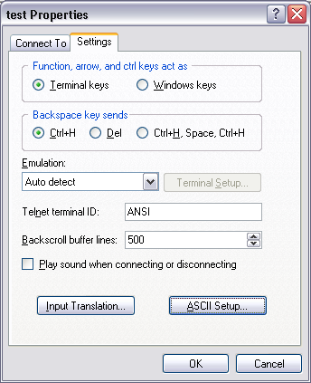
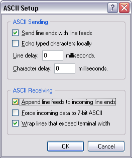
Easy Script in Python
80000ST10020a Rev.13 – 2010-12-03
Reproduction forbidden without Telit Communications S.p.A. written authorization - All Rights Reserved
Page 79 of 117


Easy Script in Python
80000ST10020a Rev.13 – 2010-12-03
Another way to download using HyperTerminal and when PythonWin is installed, is to
disconnect and, when the prompt appears, to right click on the file and select
“download”. Reconnect after the download completes.
4.1.4.
Enable Python script
Command:
AT#ESCRIPT=“< script_name >“
AT#ESCRIPT?
< script_name >: file name
Select the Python script which will be executed (the enabled script .py or .pyo) from the
next start-up and in every future start-up using the AT#ESCRIPT command. In case the
Python script consists of more than one file only the main file should be executed.
First choose the script you want to enable between the ones you’ve downloaded:
AT#LSCRIPT? can help you checking the names of the scripts;
AT#ESCRIPT? can help you check the name of the script that is enabled at the moment
NOTE:
There is no error return value for non existing script name in the module memory typed
in command AT#ESCRIPT. For this reason it’s recommended to double check the name
of the script that you want to execute. On the other hand this characteristic permits
additional possibilities: like enabling the Python script before downloading it on the
module or non having to enable the same script name every time the script has been
changed, deleted and replaced with another script but with the same name. Note also
that the file extension must be .py.
For example:
AT#ESCRIPT=”a.py”
Wait for enable result: OK.
Reproduction forbidden without Telit Communications S.p.A. written authorization - All Rights Reserved
Page 80 of 117


Easy Script in Python
80000ST10020a Rev.13 – 2010-12-03
4.1.5.
Execute Python script
The Python script you have downloaded to module and enabled is executed at every
module power on if the DTR line is sensed LOW (2.8V at the module DTR pin - RS232
signals are inverted -) at start-up, (in this case no AT command interface is connected
to the modem port) and if the script name you enabled matches with one of the script
names of the scripts you downloaded.11
In order to gain again the AT command interface on the modem physical port (for
example to update locally a new script) the module shall be powered on with the DTR
line HIGH (0V at the module DTR pin) so that the script is not executed and the Python
engine is stopped.
NOTE:
See AT#STATMODESCR and AT#EXECSCR commands description for further Python
script execution modes.
The real execution of the Python script is delayed from the power on due to the time
needed by Python to parse the not compiled script. The longer is the script, the longer
is this delay. The real execution of compiled Python scripts (.pyo) is faster just opening
and reading the file from NVM.
TIP:
It is strongly suggested to compile all Python scripts on the PC and download only .pyo
files to the module to speed up the scripts execution.
4.1.6.
Reading Python script
Command: AT#RSCRIPT=“< script_name >“
< script_name >: file name
With the following command AT#RSCRIPT you can read a saved script text, a compiled
script, a generic text or binary file. The file read can be saved using “Capture Text” in
HyperTerminal. Port settings should be baud rate 115200bps and hardware flow
control.
11 The Python script will be executed when the module is powered ON and if the serial cable has previously been
disconnected.
Reproduction forbidden without Telit Communications S.p.A. written authorization - All Rights Reserved
Page 81 of 117


Easy Script in Python
80000ST10020a Rev.13 – 2010-12-03
If know-how protection is activated than AT#RSCRIPT will return only OK: no Python
script source code will be returned. In this way no one will be able to read your Python
script from the module serial port.
The Python script will be still in the Python script list and it will be still possible to
delete it and to overwrite it.
Example:
AT#RSCRIPT=”a.py”
returns Python script source code a.py
4.1.7.
List saved Python scripts
Command: AT#LSCRIPT
This command shows the list of the file names currently saved and the number of free
bytes in memory.
4.1.8.
Deleting Python script
Command: AT#DSCRIPT=“< script_name >“
< script_name >: file name
The Python script, compiled script, generic text or binary file can be deleted from the
module memory using the #DSCRIPT command.
For example:
AT#DSCRIPT=”a.py”
Wait for result: OK.
4.1.9.
Restart Python script
Command: AT#REBOOT
This is an execution command that causes the restart of the module and execution of
the active script on the start-up.
Reproduction forbidden without Telit Communications S.p.A. written authorization - All Rights Reserved
Page 82 of 117


Easy Script in Python
80000ST10020a Rev.13 – 2010-12-03
4.2.
Run AT Interface and Python at the same time
With new start mode for Python it is possible to use the standard AT command
interface on ASC0 and run a Python script at the same time. This behavior can be
obtained with the following AT command:
AT#STARTMODESCR=2
NOTE:
This command will be active only after a reboot or switching off and then on the device.
When this command is set, note that the following differences with the standard use of
AT interface will appear:
the AT command interface is available on ASC0 and is connected to third AT
instance parser. Note that parameters saved in profiles can be different
between different AT instance parsers, so in this case only setting from the third
AT instance parser will be applied.12
the AT command interface is available on ASC0 and is connected to third AT
instance parser even while the script is not enabled (AT#ESCRIPT) and is not
running.
the AT command interface is available on ASC0 and continues to be connected
to third AT instance parser also in case Python script exits, for an error or ends
normally.
the AT command interface will not be available on ASC0 if the Python script
imports module SER.
For backward compatibility MDM interface must stay connected to first AT
instance parser and MDM2 interface must stay connected to second AT instance
parser.
If there is an enabled Python script and the module is powered-on the Python
script will start running, the only way to interrupt its execution is to disable it by
sending AT#ESCRIPT and reboot the Telit module. Another possibility is to
change script startmode with AT#STARTMODESCR 13 command by setting
parameter values to 0 or 1 while the Python script is running and rebooting the
Telit module afterwards.
This mode is not compatible with the use of CMUX protocol or the setting
AT#CMUXSCR=1.
12 Normally, the AT command interface on ASC0 is connected to the first AT instance parser (in case we’re using
the serial port with or without CMUX and there is no Python script running) while in case of
AT#STARTMODESCR=2, CMUX is activated and the third CMUX port will be used for AT command interface
(which means that the settings from the third AT instance parser will be applied).
13 For further information on this AT command and parameter settings please consult the AT Commands
Reference Guide
Reproduction forbidden without Telit Communications S.p.A. written authorization - All Rights Reserved
Page 83 of 117


Easy Script in Python
80000ST10020a Rev.13 – 2010-12-03
4.3.
Debug Python script
The debug of the active Python script can be done both on the emulated environment of
the Telit Python Package (refer to its documentation) or directly on the target with the
second serial port pin EMMI TX (actually a not translated RS232 serial port as the RXD
pin).
Connect to the module serial port EMMI TX at 115200 8-N-1 with hardware flow control
active.
Now you can see all Python outputs to stdout and stderr:
Python information messages (for example the version);
Python error information;
Results of all Python “print” statements.
The Telit GM862-GPS and GE863-GPS have the second serial port pin EMMI TX used for
continuous direct output of GPS NMEA sentences that’s why there is another procedure
to follow for debugging of the Telit GPS modules. There are two ways to perform direct
debugging: activate SSC port or use CMUX.
4.3.1.
Debug Python script on GPS modules using SSC bus
SSC (Serial Synchronous Controller) port can be configured to be compatible to the SPI
Interface, available via 4 GPIO pins. In this case the Python debug data will be read from
the USB port placed on the EVK2.
NOTE:
for the direct debug of GPS modules a software version starting from 7.02.001 is
needed
Reproduction forbidden without Telit Communications S.p.A. written authorization - All Rights Reserved
Page 84 of 117


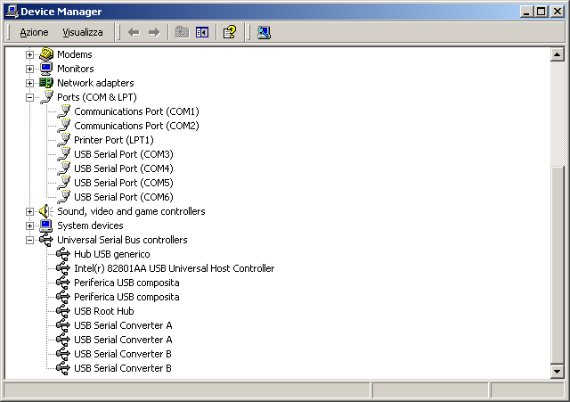
Easy Script in Python
80000ST10020a Rev.13 – 2010-12-03
4.3.1.1.
Installation of the drivers
Before starting the process of debug the drivers should be installed in the following
way:
Download the FTDI drivers and the installation guide in order to use the USB port
placed on the EVK2 (http://www.ftdichip.com/Drivers/D2XX.htm )
Save the drivers (unzipped) on the PC
After connecting USB cable with PC and USB port placed on the EVK2 (that has
been powered on): the installation procedure should start, according to the
installation guide instructions
When the installation is concluded you will have four new COM ports (see
Control Panel – System – Hardware – Device Manager) and one not visible SSC
port
close any application controlling the serial ports and install the Python Debug
application (please contact our technical support to get Python Debug application)
Reproduction forbidden without Telit Communications S.p.A. written authorization - All Rights Reserved
Page 85 of 117


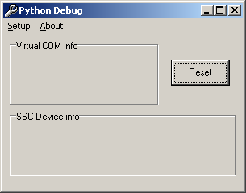
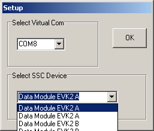
Easy Script in Python
80000ST10020a Rev.13 – 2010-12-03
NOTE:
if an error messages appears during the installation, it will be necessary to close any
application controlling the serial ports
the following box should appear when you run the Pythondebug.exe for the first
time:
Select the Setup option.
Then select a Virtual COM, different from the other COM ports preferably
(“COM8” in the figure), and associate to it the first SSC device that appearing in
the list (“Data Module EVK2A” in the figure),
Reproduction forbidden without Telit Communications S.p.A. written authorization - All Rights Reserved
Page 86 of 117


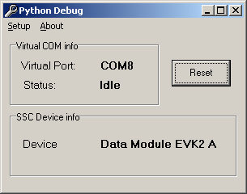
Easy Script in Python
80000ST10020a Rev.13 – 2010-12-03
the following figure should appear:
NOTE:
If the PC uses the EVK2 RS232 upper port (ASC0) to send AT commands, remember to
put all jumpers to set RS232 mode. This will not affect reading of Python debug data
from the USB port
4.3.1.2.
Debugging process
After the successful installation of the drivers process of direct debugging of the Telit
GPS modules can start. The steps are the following:
Switch on the module and activate the SSC output with the following AT
command: AT#SSCTRACE=1
Download and enable your Python script, then power OFF the module.
to be sure that DTR input to the module is HIGH disconnect the RS232 cable from
the module side (i.e. RS232 DTR on the modem serial port is LOW);
check if you have the USB cable connected between the USB port of the PC and
the USB port placed on the EVK2
Reproduction forbidden without Telit Communications S.p.A. written authorization - All Rights Reserved
Page 87 of 117


Easy Script in Python
80000ST10020a Rev.13 – 2010-12-03
every time before you power ON the module you have to click on the Reset button
in the Python Debug application (necessary to reactivate the association
between the virtual Com port and the SSC device)
Run a terminal emulator application (e.g. Hyper Terminal) to trace the activity of
the Python script, with the following setting:
virtual Port set in Python
connected COM
Debug (COM8 in the example)
115 200
Bit rate
Data bits
8
No parity
Parity
1
Stop bit
Flow control
Hardware
Power ON the module and you should see the script starting and the debug info
appearing on the terminal emulator window.
If the debug strings do not appear on the screen: power OFF the module, check
again if USB cable is correctly connected, reset the Python Debug application,
than power ON the module and run the terminal emulator application with the
same settings as before.
4.3.2.
Debug Python script on GPS modules using CMUX
CMUX (Converter-Multiplexer) is a multiplexing protocol implemented in the Telit
module that can be used to send data, SMS, fax, TCP data. The Multiplexer mode
enables one serial interface to transmit data to four different customer applications
form which one is dedicated to Python debug. This is achieved by providing four virtual
channels using a Multiplexer (Mux).
With activating of the CMUX feature debugging data can be received on the serial ASC0
port mounted on EVK2.
NOTE:
for the direct debug of GPS modules a software version starting from 7.02.X01 is
needed.
Reproduction forbidden without Telit Communications S.p.A. written authorization - All Rights Reserved
Page 88 of 117


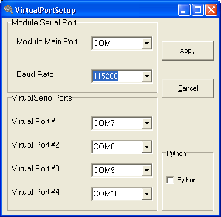
Easy Script in Python
80000ST10020a Rev.13 – 2010-12-03
4.3.2.1.
Installation
Install the Telit Serial Port Mux ver 1.08-B00114 application on your PC. A box
similar to this will appear at the end of installation:
Select the baud rate and then click on the Apply button
14 please contact our technical assistance to get the latest version
Reproduction forbidden without Telit Communications S.p.A. written authorization - All Rights Reserved
Page 89 of 117


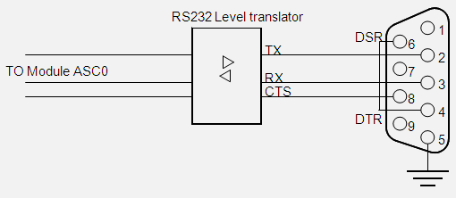
Easy Script in Python
80000ST10020a Rev.13 – 2010-12-03
4.3.2.2.
Debugging process
NOTE:
If the PC uses the EVK2 RS232 upper port (ASC0) to send AT commands, remember to
put all jumpers to set RS232 mode.
Otherwise, connect the serial port for AT commands (ASC0) and a PC RS232 COM port
with a RS232 serial cable.The CMUX needs all the UART connections except RING and
DCD to implement flow control. A workaround does exist to avoid the usage of the full
HW flow control; it consists in connecting TX, RX, and CTS. From the PC side, loop
together DTR and DSR line as described in the following picture:
Switch ON the module and with a terminal emulator (e.g. Hyper Terminal) and
send the following commands to the module:
AT#SSCTRACE=0 disabled SSC output
AT#CMUXSCR=1,<bitrate> activated the CMUX feature on the module;
put the desired bit rate (e.g. 115200)
AT#STARTMODESCR=1,10 module waits for minimum 10 seconds (recommended
value; can be changed) and if there is no AT commands
sent in this period (except AT<Enter>) start the enabled
Python script, regardless of the DTR status (low or high).
Reproduction forbidden without Telit Communications S.p.A. written authorization - All Rights Reserved
Page 90 of 117


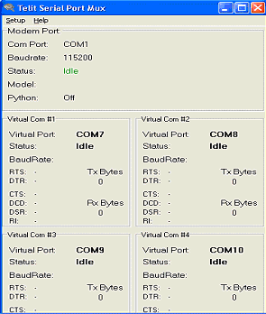
Easy Script in Python
80000ST10020a Rev.13 – 2010-12-03
Download and enable15 your Python script, then power OFF the module.
Close any application controlling the serial ports (e.g. Hyper Terminal)
Run the Telit Serial Port Mux ; a figure similar to the one below will appear:
15 follow the procedure of download and enable of the Python script reported in the paragraph 4.2 and 4.3
Reproduction forbidden without Telit Communications S.p.A. written authorization - All Rights Reserved
Page 91 of 117


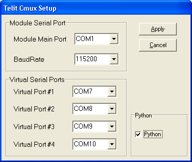
Easy Script in Python
80000ST10020a Rev.13 – 2010-12-03
Check if the Setup options are the following:
Set the Module Main Port as the real COM port you have available (e.g. COM1 in the
figure), check the Python box and then select the Apply button.
Reproduction forbidden without Telit Communications S.p.A. written authorization - All Rights Reserved
Page 92 of 117


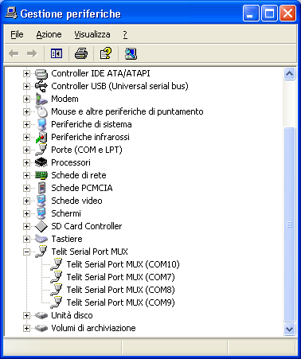
Easy Script in Python
80000ST10020a Rev.13 – 2010-12-03
After this step, you will have 4 new Telit Serial Port Mux ports (see Control Panel
– System – Hardware – Device Manager) as in the figure below:
Run a terminal emulator application (e.g. Hyper Terminal) to trace the activity of
the Python script, with the following setting:
virtual port #4 set in Telit
connected COM
CMUX window (COM10 in
the figure)
Bit rate
115 200
Data bits
8
Parity
No parity
Stop bit
1
Flow control
Hardware
In the Telit Serial Port Mux window, “Status:” of the Virtual Port#4, after establishing
connection in Hyper Terminal, will change from Idle to Opened
Power on the module and wait for at least 10 seconds without sending any AT
command (except AT<Enter>);
In the Telit Serial Port Mux window, “Status:” of the Modem Port: will change in
the following way (before 10 seconds expired):
Idle cycle between Connecting and Error Connected
Reproduction forbidden without Telit Communications S.p.A. written authorization - All Rights Reserved
Page 93 of 117


Easy Script in Python
80000ST10020a Rev.13 – 2010-12-03
After 10 seconds you should see the script starting and the debug info
appearing on the terminal emulator window.
If an ERROR messages appears in the Virtual Port #1,2,3,4 boxes, close any
application controlling the serial ports and then restart the Telit CMUX
application. If this procedure is not sufficient to avoid ERROR message, reset
the PC, run again Telit Serial Port Mux with the same settings and repeat the
procedure as described above.
If you need to debug the same Python application again, then:
1. Disconnect the terminal emulator application (eg. Hyper Terminal) from the
Virtual Port#4 (in this case COM10)
2. “Status:” of the Virtual Port#4 in the Telit Serial Port Mux window, should
change from Opened to Idle
3. Switch off the module
4. Connect the terminal emulator application to Virtual Port#4 (in this case
COM10)
5. “Status:” of the Virtual Port#4 in the Telit Serial Port Mux window16, should
change from Idle to Opened
6. Switch on the module and wait for the “Status:” of the Modem Port in the
Telit Serial Port Mux window to go connected
16 If the Telit Serial Port Mux application seems to be freezed, please consider that it becomes active after the
module is switched on.
Reproduction forbidden without Telit Communications S.p.A. written authorization - All Rights Reserved
Page 94 of 117


Easy Script in Python
80000ST10020a Rev.13 – 2010-12-03
5.
Python standard functions
In this paragraph you can find detailed description of Python language supported
features in Data Terminal Modules. Note that all the functions listed below are
available in the Python version 1.5.2+.
5.1.
Technical characteristics
5.1.1.
General
All Python statements and almost all Python built-in types and functions are supported.
See in the table below the features not supported:
complex
float
docstring
Available built-in modules are:
marshal
imp
__main__
__builtin__
sys
md5
All others are not supported.
Reproduction forbidden without Telit Communications S.p.A. written authorization - All Rights Reserved
Page 95 of 117


Easy Script in Python
80000ST10020a Rev.13 – 2010-12-03
5.2.
Python supported features
Refer to the documents available online such as: Python 1.5.2 Tutorial, Python 1.5.2
Reference Manual or Python 1.5.2 Library Reference for further details for all the
features listed in the paragraphs below.
5.2.1.
Operators, statements, functions
List of supported operators, statements, functions:
comments #
line joining \
operators +, -, *, /, **, %
operators <<, >>, &, |, ^, ~
parentheses
assignment
comparison operators <, >, ==, <=, >=, !=, <>
print statement
if, elif, else statement
indentation
and, or, not keywords
for in statement
while statement
range() function
break and continue statements
pass statement
functions (without docstrings) (def)
return statement
objects
object methods
del statement
modules
import statement
from statement
exceptions
try except finally statements
raise statement
classes (class)
class instances
global statement
is, is not tests
exec statement
Reproduction forbidden without Telit Communications S.p.A. written authorization - All Rights Reserved
Page 96 of 117


Easy Script in Python
80000ST10020a Rev.13 – 2010-12-03
5.2.2.
Truth Value Testing
Truth value testing is supported.
5.2.3.
Boolean Operations
The following Boolean operations are supported:
x or y
x and y
not x
5.2.4.
Comparisons
The following comparisons are supported:
<
<=
>
>=
==
<>
!=
is
is not
Reproduction forbidden without Telit Communications S.p.A. written authorization - All Rights Reserved
Page 97 of 117


Easy Script in Python
80000ST10020a Rev.13 – 2010-12-03
5.2.5.
Numeric Types: Integers
The following operations are supported with the integer type:
x + y
x - y
x * y
x / y
x % y
-x
+x
abs(x)
int(x)
long(x)
divmod(x, y)
pow(x, y)
x ** y
x | y
x ^ y
x & y
x << n
x >> n
~x
5.2.6.
Numeric Types: Long Integers
The following operations are supported with long integers:
x + y
x - y
x * y
x / y
x % y
-x
+x
abs(x)
int(x)
long(x)
divmod(x, y)
pow(x, y)
x ** y
x | y
x ^ y
x & y
x << n
x >> n
~x
Reproduction forbidden without Telit Communications S.p.A. written authorization - All Rights Reserved
Page 98 of 117


Easy Script in Python
80000ST10020a Rev.13 – 2010-12-03
5.2.7.
Numeric Types: Float
Floating point numbers are not supported.
5.2.8.
Numeric Types: Complex
Complex numbers are not supported.
5.2.9.
Sequence Types: Strings
The following operations are supported with the string type:
x in s
x not in s
s + t
s * n, n * s
s[i]
s[i:j]
len(s)
min(s)
max(s)
The only difference between Python version 1.5.2+ and 1.5.2 is that strings are objects
that support the following methods:
s.capitalize()
s.count(sub[, start[, end]])
s.endswith(suffix[, start[,
end]])
s.find(sub[, start[, end]])
s.index(sub[, start[, end ]])
s.join(seq)
s.lstrip()
s.lower()
s.replace(old, new[,
maxsplit])
s.rfind(sub[, start[, end]])
s.rindex(sub[, start[, end]])
s.rstrip()
s.split([sep [,maxsplit]])
s.startswith(prefix[, start[,
end]])
Reproduction forbidden without Telit Communications S.p.A. written authorization - All Rights Reserved
Page 99 of 117


Easy Script in Python
80000ST10020a Rev.13 – 2010-12-03
s.strip()
s.swapcase()
s.translate(table[,
deletechars])
s.upper()
The following attribute is supported:
__methods__
For string methods refer to Python 2.0.1 Library Reference for further details.
5.2.10.
Sequence Types: Tuples
The following operations are supported with the tuples:
x in s
x not in s
s + t
s * n, n * s
s[i]
s[i:j]
len(s)
min(s)
max(s)
5.2.11.
Sequence Types: Lists
The following operations are supported with the lists:
x in s
x not in s
s + t
s * n, n * s
s[i]
s[i:j]
len(s)
min(s)
Reproduction forbidden without Telit Communications S.p.A. written authorization - All Rights Reserved
Page 100 of 117


Easy Script in Python
80000ST10020a Rev.13 – 2010-12-03
max(s)
s[i] = x
s[i:j] = t
del s[i:j]
s.append(x)
s.extend(x)
s.count(x)
s.index(x)
s.insert(i, x)
s.pop([i])
s.remove(x)
s.reverse()
s.sort([cmpfunc])
The following attribute is supported:
__methods__
5.2.12.
Mapping Types: Dictionaries
The following operations are supported with the dictionaries:
len(a)
a[k]
a[k] = x
del a[k]
a.clear()
a.copy()
a.has_key(k)
a.items()
a.keys()
a.update(b)
a.values()
a.get(k[, x])
The following attribute is supported:
__methods__
Reproduction forbidden without Telit Communications S.p.A. written authorization - All Rights Reserved
Page 101 of 117


Easy Script in Python
80000ST10020a Rev.13 – 2010-12-03
5.2.13.
Other Built-in Types: File Objects
The following methods are supported with the file objects:
f.close()
f.flush()
f.isatty()
f.fileno()
f.read([size])
f.readline([size])
f.readlines([sizehint])
f.seek(offset[,
whence])
f.tell()
f.write(str)
f.writelines(list)
The following method is not supported:
f.truncate([size])
The following attributes are supported:
__methods__
softspace
mode
name
closed
5.2.14.
Other Built-in Types: Modules
Modules objects and modules attribute access are supported.
The following attributes are supported:
__dict__
__name__
Reproduction forbidden without Telit Communications S.p.A. written authorization - All Rights Reserved
Page 102 of 117


Easy Script in Python
80000ST10020a Rev.13 – 2010-12-03
5.2.15.
Other Built-in Types: Classes
Classes objects, class attribute access and class instances are supported.
The following attributes are supported:
__dict__
__name__
__bases__
__module__
The following attributes are supported by class methods:
im_func
im_self
im_class
The following special methods are supported:
__init__(self [, args...])
__del__(self)
__repr__(self)
__str__(self)
__cmp__(self, other)
__hash__(self)
__nonzero__(self)
__getattr__(self, name)
__setattr__(self, name,
value)
__delattr__(self, name)
5.2.16.
Other Built-in Types: Functions
Functions objects and function call are supported with the following attributes:
func_code
func_globals
func_name
func_defaults
__name__
Reproduction forbidden without Telit Communications S.p.A. written authorization - All Rights Reserved
Page 103 of 117


Easy Script in Python
80000ST10020a Rev.13 – 2010-12-03
5.2.17.
Other Built-in Types: Methods
Methods objects are supported with the following attributes:
__name__
__self__
5.2.18.
Other Built-in Types: Type Objects
Type objects are supported.
5.2.19.
Other Built-in Types: Null Object
Null object is supported.
5.2.20.
Other Built-in Types: Ellipsis Object
Ellipsis object is supported.
5.2.21.
Other Built-in Types: Buffer Objects
Buffer objects are supported.
5.2.22.
Other Built-in Types: Range Objects
Range objects are supported.
Reproduction forbidden without Telit Communications S.p.A. written authorization - All Rights Reserved
Page 104 of 117


Easy Script in Python
80000ST10020a Rev.13 – 2010-12-03
5.2.23.
Other Built-in Internal Types: Code Objects
Code objects and code object execution is supported with the following attributes:
co_argcount
co_nlocals
co_stacksize
co_flags
co_code
co_consts
co_names
co_varnames
co_filename
co_name
co_firstlineno
co_lnotab
5.2.24.
Other Built-in Internal Types: Frame Objects
Frame objects are supported with the following attributes:
f_back
f_code
f_builtins
f_globals
f_locals
f_lasti
f_lineno
f_restricted
f_trace
f_exc_type
f_exc_value
f_exc_traceback
5.2.25.
Other Built-in Internal Types: Traceback Objects
Traceback objects are supported with the following attributes:
tb_next
tb_frame
tb_lasti
tb_lineno
Reproduction forbidden without Telit Communications S.p.A. written authorization - All Rights Reserved
Page 105 of 117


Easy Script in Python
80000ST10020a Rev.13 – 2010-12-03
5.2.26.
Other Built-in Internal Types: Slice Objects
Slice objects are supported with the following attributes:
start
stop
step
5.2.27.
Built-in Exceptions
The following built-in exceptions are supported:
Exception
StandardError
ArithmeticError
LookupError
AssertionError
AttributeError
EOFError
FloatingPointError
EnvironmentError
IOError
OSError
ImportError
IndexError
KeyError
KeyboardInterrupt
MemoryError
RemovedFeatureError
NameError
OverflowError
RuntimeError
NotImplementedError
SyntaxError
SystemError
SystemExit
UnboundLocalError
TypeError
ValueError
ZeroDivisionError
Reproduction forbidden without Telit Communications S.p.A. written authorization - All Rights Reserved
Page 106 of 117


Easy Script in Python
80000ST10020a Rev.13 – 2010-12-03
RemovedFeatureError is an exception added in Python version 1.5.2+. RemovedFeatureError
is raised when trying to use floats or complex that are not supported.
Exception are strings objects. If file exceptions.py is downloaded to Data Terminal
Module Python than module exceptions is automatically imported at the scripts start
and exceptions are class objects.
5.2.28.
Built-in Functions
The following built-in functions are supported:
abs(x)
cmp(x, y)
round(x [, n]) (returns error)
vars([object])
ord(c)
__import__(name[, globals[, locals[,
fromlist]]])
callable(object)
coerce(x, y)
compile(string, filename, kind)
complex(real [, imag]) (returns error)
delattr(object, name)
divmod(a, b)
eval(expression[, globals[, locals]])
execfile(file[, globals[, locals]])
filter(function, list)
float(x) (returns error)
globals()
input([prompt])
int(x)
intern(string)
issubclass(class1, class2)
locals()
long(x)
oct(x)
open(filename[, mode[, bufsize]])
raw_input([prompt])
reload(module)
Reproduction forbidden without Telit Communications S.p.A. written authorization - All Rights Reserved
Page 107 of 117


Easy Script in Python
80000ST10020a Rev.13 – 2010-12-03
apply(function, args[, keywords])
buffer(object[, offset[, size]])
chr(i)
dir([object])
getattr(object, name[, default])
hasattr(object, name)
hash(object)
hex(x)
id(object)
isinstance(object, class)
len(s)
list(sequence)
map(function, list, ...)
max(s[, args...])
min(s[, args...])
pow(x, y[, z])
range([start,] stop[, step])
reduce(function, sequence[, initializer])
repr(object)
setattr(object, name, value)
slice([start,] stop[, step])
str(object)
tuple(sequence)
type(object)
xrange([start,] stop[, step])
5.2.29.
Built-in Modules: marshal
Built-in marshal module is supported with the following methods:
dump(value,file)
load(file)
dumps(value)
loads(string)
Reproduction forbidden without Telit Communications S.p.A. written authorization - All Rights Reserved
Page 108 of 117


Easy Script in Python
80000ST10020a Rev.13 – 2010-12-03
5.2.30.
Built-in Modules: imp
Built-in imp module is supported with the following methods:
find_module(name[, path])
get_magic()
get_suffixes()
load_module(name, file, filename, description)
new_module(name)
The following constants are supported:
PY_SOURCE
PY_COMPILED
C_BUILTIN
PY_FROZEN
5.2.31.
Built-in Modules: __main__
Built-in __main__ module is supported.
5.2.32.
Built-in Modules: __builtin__
Built-in __builtin__ module is supported.
Reproduction forbidden without Telit Communications S.p.A. written authorization - All Rights Reserved
Page 109 of 117


Easy Script in Python
80000ST10020a Rev.13 – 2010-12-03
5.2.33.
Built-in Modules: sys
Built-in sys module is supported with the following methods:
exc_info()
exit([arg])
getrefcount(object)
setcheckinterval(interval)
The following variables are supported:
stdin
stdout
stderr
__stdin__
__stdout__
__stderr__
version
hexversion
copyright
platform
executable
prefix
exec_prefix
maxint
builtin_module_names
removed_features
argv
exc_type
exc_value
exc_traceback
exitfunc
last_type
last_value
last_traceback
modules
path
tracebacklimit
The variables hexversion and removed_features are variables added in Python version
1.5.2+. “Hexversion” is the version number encoded as a single integer. This is called
‘hexversion’ since it only really looks meaningful when viewed as the result of passing
it to the built-in hex() function. “Removed_features” is a tuple of the strings
“ComplexType” "FloatType" and "DocStrings".
Reproduction forbidden without Telit Communications S.p.A. written authorization - All Rights Reserved
Page 110 of 117


Easy Script in Python
80000ST10020a Rev.13 – 2010-12-03
5.2.34.
Built-in Modules: md5
Built-in md5 module is supported with the following functions:
new([arg])
md5([arg])
The following methods are supported:
update(arg)
digest()
copy()
5.2.35.
Built-in Modules: binascii
Built-in binascii module is supported with the following functions:
a2b_uu(string)
b2a_uu(data)
a2b_base64(string)
b2a_base64(data)
a2b_hqx(string)
rledecode_hqx(data)
rlecode_hqx(data)
b2a_hqx(data)
crc_hqx(data,crc)
The following exceptions are supported:
Error
Incomplete
Available in version 10.00.xx3.
5.2.36.
Library Modules
Most of Python Library Modules are not supported because they depend on Operative
System. Basically if a library module imports OS that module is not supported. Some
library modules do not depend on Operative System and are supported. An example is
string.py.
Reproduction forbidden without Telit Communications S.p.A. written authorization - All Rights Reserved
Page 111 of 117


Easy Script in Python
80000ST10020a Rev.13 – 2010-12-03
6.
Python non standard functions
6.1.
__builtin__non standard functions
6.1.1.
Non standard function: unlink
This function is used to remove (delete) the file filename. The argument, filename, is
the file name to be removed (deleted).
If the file does not exist or an error occurs an exception is raised.
Example:
unlink(“test.txt”)
6.1.2.
Non standard function: rename
This function is used to rename the file oldfilename to newfilename. The first argument,
oldfilename, is the file name to be renamed, the second argument, newfilename, is the new
file name.
If the file oldfilename does not exist or an error occurs an exception is raised.
If the file newfilename exists, it will be silently overwritten.
Example:
rename(“test1.txt”, “test2.txt”)
6.1.3.
Non standard function: flashflush
This function is used to flush flash writing operations. The Python script execution is stopped
until all queued data is written on flash.
Example:
unlink(“test.txt”)
flashflush()
Reproduction forbidden without Telit Communications S.p.A. written authorization - All Rights Reserved
Page 112 of 117


Easy Script in Python
80000ST10020a Rev.13 – 2010-12-03
7.
Python notes
7.1.
Memory Limits
In order to prevent memory error, in phase of compilation or execution of the script, we
advise you to consider the following limits:
allocated memory for each variable
number of the variables that can cause RAM overflow.
The memory available on Telit Python modules includes:
• around 2MB of Non Volatile Memory for the user scripts and data
• 1.2 MB RAM reserved for Python engine usage
• 16KB of memory for each variable
In order to give rough idea of the impact of these constrains consult the table below
that contains limits for different types of variables. Please note that these limits are
estimated values and should be used only to give general information in Python script
development.
Type of variable
number of elements17
example
string
16 000
‘data’
list
4 000
[23,‘data’,‘c’]
tuple
4 000
(23,‘data’,‘c’)
range
4 000
range(3)=[0,1,2]
dictionary
worst condition 682
{ 'aaa':1000, 'bbb':1001}
NOTE:
each element of list, tuple, range, or dictionary has up to 16KB of memory available.
Reproduction forbidden without Telit Communications S.p.A. written authorization - All Rights Reserved
Page 113 of 117


Easy Script in Python
80000ST10020a Rev.13 – 2010-12-03
At each startup the Python task loads a list of:
variable names
module names
methods names
strings delimited by “ “ or by ‘ ‘ if not terminated with \r
All these names are included in the main script and in all the files .py called directly or
indirectly by the main. The number of names that can be loaded at each startup from
the Python task is around 500.
We advise you to use the same variable names in different .py files of the same project,
in case this is possible.
The recommended dimension of the compiled file .pyo should be <16KByte
NOTE:
It is highly recommended not to use the module as a data logger since all flash
memories have limited number of writing and deleting cycles.
Some limits of the available NVM that affect file saving procedures and need to be
considered have been fixed below:
max number of
255
files saved in NVM
max number of
files open
16
contemporary
max length of file
16 characters
name
Other useful info for NVM usage in application development:
writing in NVM over 2Mbyte could cause a slight decrees of writing speed
AT#LSCRIPT command might not always show a exact number of bytes that can be
used for NVM due to dynamic memory reorganisation process
Reproduction forbidden without Telit Communications S.p.A. written authorization - All Rights Reserved
Page 114 of 117


Easy Script in Python
80000ST10020a Rev.13 – 2010-12-03
WARNING:
It is recommended the insertion of a 2 seconds pause (MOD.sleep(20)) after each
AT#DSCRIPT command send by a Python script.
7.2.
Other Limits
Some other Python limits that should be considered while developing your Python
script in order to find an appropriate solution are listed below:
Python scripts should not interfere with GSM/GPRS standard operations18, for this
reason there is a pause of 50 ms each second during the Python task activity.
GPIO polling frequency is <100Hz;
I2C and SPI speed is from 10Kb/s to 20Kb/s
18 This means that serial port, protocol stack etc. are able to operate independently from the Python script.
Reproduction forbidden without Telit Communications S.p.A. written authorization - All Rights Reserved
Page 115 of 117


Easy Script in Python
80000ST10020a Rev.13 – 2010-12-03
8.
List of acronyms
Abbreviation Description
ACM
Accumulated Call Meter
ASCII
American Standard Code for Information Interchange
AT
Attention Commands
CB
Cell Broadcast
CBS
Cell Broadcasting Service
CCM
Call Control Meter
CLIP
Calling Line Identification Presentation
CLIR
Calling Line Identification Restriction
CMOS
Complementary Metal-Oxide Semiconductor
CR
Carriage Return
CSD
Circuit Switched Data
CTS
Clear To Send
DAI
Digital Audio Interface
DCD
Data Carrier Detected
DCE
Data Communications Equipment
DRX
Data Receive
DSR
Data Set Ready
DTA
Data Terminal Adaptor
DTE
Data Terminal Equipment
DTMF
Dual Tone Multi Frequency
DTR
Data Terminal Ready
EMC
Electromagnetic Compatibility
ETSI
European Telecommunications Equipment Institute
FTA
Full Type Approval (ETSI)
GPRS
General Radio Packet Service
GPIO
General Purpose Input Output
GSM
Global System for Mobile communication
HF
Hands Free
IIC
Inter Integrated Circuit
IMEI
International Mobile Equipment Identity
IMSI
International Mobile Subscriber Identity
IRA
International Reference Alphabet
ITU
International Telecommunications Union
IWF
Inter-Working Function
LCD
Liquid Crystal Display
Reproduction forbidden without Telit Communications S.p.A. written authorization - All Rights Reserved
Page 116 of 117


Easy Script in Python
80000ST10020a Rev.13 – 2010-12-03
LED
Light Emitting Diode
LF
Linefeed
Reproduction forbidden without Telit Communications S.p.A. written authorization - All Rights Reserved
Page 117 of 117